<!doctype html>
<html lang="en">
<head>
  <meta charset="utf-8">
  <meta name="viewport" content="width=device-width, initial-scale=1">
  <title>arxiv digest — 2026-09-12</title>
  <style>
:root {
  --bg: #ffffff;
  --fg: #1f2328;
  --muted: #59636e;
  --border: #d0d7de;
  --card: #f6f8fa;
  --link: #0969da;
}
body {
  max-width: 980px;
  margin: 0 auto;
  padding: 2rem 1rem 5rem;
  font-family: -apple-system, BlinkMacSystemFont, "Segoe UI", Helvetica, Arial, sans-serif;
  line-height: 1.55;
  color: var(--fg);
  background: var(--bg);
}
a { color: var(--link); }
img { max-width: 100%; height: auto; }
pre, code { background: var(--card); border-radius: 6px; }
pre { padding: 1rem; overflow-x: auto; }
blockquote { border-left: 4px solid var(--border); padding-left: 1rem; color: var(--muted); }
details { margin: 0.6rem 0; }
summary { cursor: pointer; font-weight: 600; }
.paper-figures-scroll {
  display: flex;
  gap: 1rem;
  overflow-x: auto;
  overscroll-behavior-x: contain;
  padding: 0.75rem 0.25rem 1rem;
  margin: 1rem 0 1.25rem;
  border-top: 1px solid var(--border);
  border-bottom: 1px solid var(--border);
  scroll-snap-type: x proximity;
}
.paper-figure-card {
  flex: 0 0 min(260px, 72vw);
  scroll-snap-align: start;
  background: var(--card);
  border: 1px solid var(--border);
  border-radius: 12px;
  padding: 0.55rem;
}
.paper-figure-card img {
  display: block;
  width: 100%;
  max-height: 240px;
  object-fit: contain;
  background: white;
  border-radius: 8px;
}
.paper-figure-caption {
  display: block;
  margin-top: 0.5rem;
  color: var(--muted);
  font-size: 0.85rem;
}
.figure-strip-hint {
  color: var(--muted);
  font-size: 0.9rem;
  margin-bottom: -0.3rem;
}
</style>
  <!-- MathJax: renders $...$ inline math and $$...$$ display math, plus
       \(...\) and \[...\]. Loaded from the official CDN; works offline
       once cached. Configured to skip code/pre blocks so arxiv IDs that
       look like dollar amounts don't get mangled. -->
  <script>
    window.MathJax = {
      tex: {
        inlineMath: [['$', '$'], ['\\(', '\\)']],
        displayMath: [['$$', '$$'], ['\\[', '\\]']],
        processEscapes: true,
        processEnvironments: true
      },
      options: {
        skipHtmlTags: ['script', 'noscript', 'style', 'textarea', 'pre', 'code'],
        ignoreHtmlClass: 'tex2jax_ignore',
        processHtmlClass: 'tex2jax_process'
      }
    };
  </script>
  <script id="MathJax-script" async
    src="https://cdn.jsdelivr.net/npm/mathjax@3/es5/tex-chtml.js"></script>
</head>
<body>
<header style="background-color: #333; color: white; padding: 15px; margin-bottom: 20px;">
  <h1 style="margin: 0; font-size: 24px;">
    <a href="https://ochelpan.github.io/arXiv_clean/" style="color: white; text-decoration: none;">Main</a>
  </h1>
</header>

<h1>Daily arXiv Report</h1>

<hr>
<p>
<a href="index.html">← Index</a>
 · <a href="papers_04.html">← Previous</a> · <a href="papers_06.html">Next →</a>
</p>
<hr>

<h2>Papers 81–100</h2>
<p><a id="paper-2609.10802"></a></p>
<h3 id="a-time-frequency-framework-for-gkp-codes"><a href="http://arxiv.org/abs/2609.10802v1">A Time-Frequency Framework for GKP Codes</a></h3>
<p><strong>Authors:</strong> Franz Luef, Eduard Ortega<br>
<strong>Type:</strong> theory · <strong>Category:</strong> quantum information and computing · <strong>PDF:</strong> <a href="https://arxiv.org/pdf/2609.10802v1">https://arxiv.org/pdf/2609.10802v1</a><br>
<strong>Analysis basis:</strong> full PDF text, analyzed in chunks
<strong>Topic relevance:</strong> <code>quantum measurements</code> <strong>1/5</strong></p>
<div class="figure-strip-hint">↔ Scroll figures horizontally</div>
<div class="paper-figures-scroll">
<figure class="paper-figure-card">
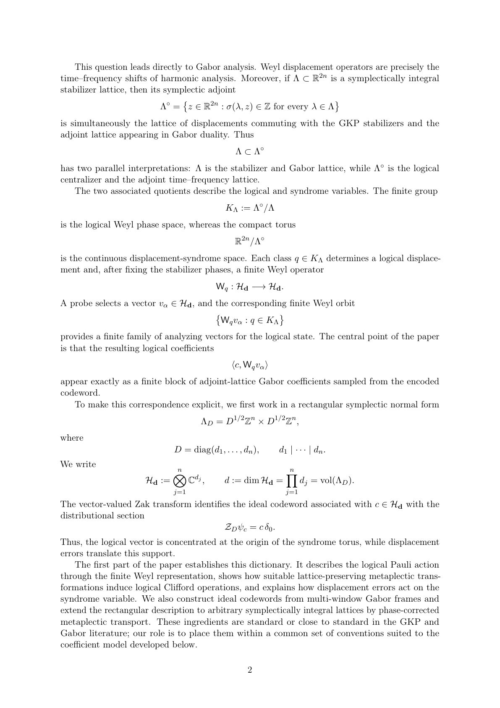
<figcaption class="paper-figure-caption"><b>Fig 1.</b> Low-resolution page preview, page 2</figcaption>
</figure>
<figure class="paper-figure-card">
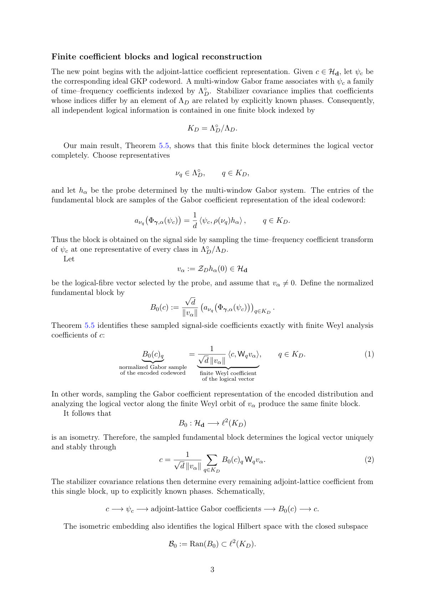
<figcaption class="paper-figure-caption"><b>Fig 2.</b> Low-resolution page preview, page 3</figcaption>
</figure>
<figure class="paper-figure-card">
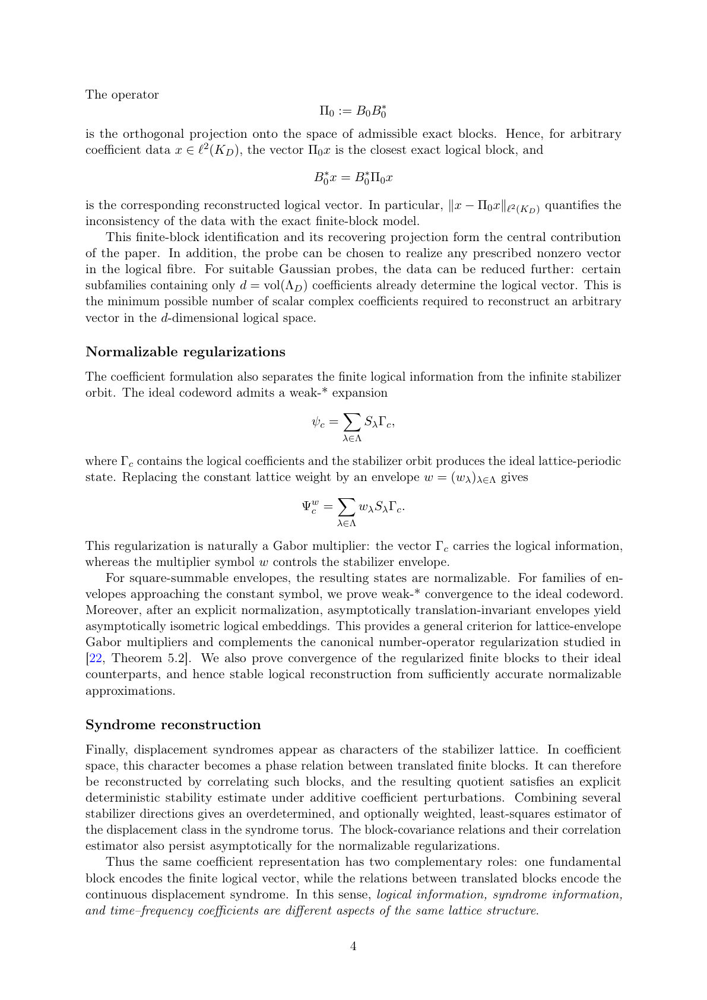
<figcaption class="paper-figure-caption"><b>Fig 3.</b> Low-resolution page preview, page 4</figcaption>
</figure>
<figure class="paper-figure-card">
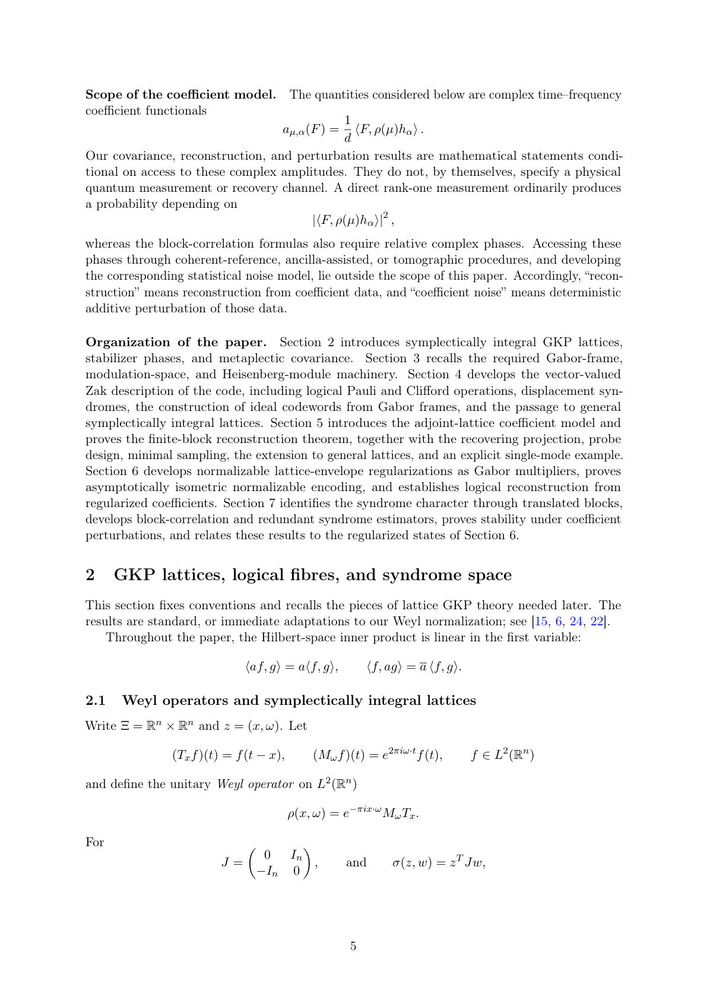
<figcaption class="paper-figure-caption"><b>Fig 4.</b> Low-resolution page preview, page 5</figcaption>
</figure>
<figure class="paper-figure-card">
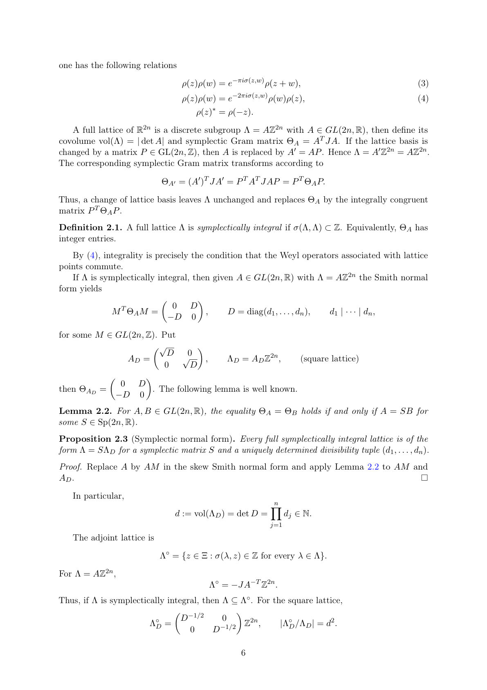
<figcaption class="paper-figure-caption"><b>Fig 5.</b> Low-resolution page preview, page 6</figcaption>
</figure>
</div>

<p><strong>Summary.</strong> This paper develops a time-frequency framework using Gabor analysis to analyze lattice GKP codes. It proves that the logical information can be uniquely and stably recovered from a finite block of phase-space coefficients. Furthermore, it provides a method to extract the continuous displacement syndrome by analyzing the phase relationships between these coefficients, offering a theoretical blueprint for syndrome measurement.</p>
<p><strong>Why it may be interesting.</strong> This work provides a powerful mathematical tool for understanding continuous variable quantum error correction, linking abstract phase-space representations (Gabor analysis) directly to measurable syndrome information in a stable, quantifiable manner.</p>
<details>
<summary>Detailed structure</summary>
<p><strong>Main problem.</strong> To develop a rigorous time-frequency framework for lattice Gottesman-Kitaev-Preskill (GKP) codes, specifically addressing how to stably reconstruct the finite logical information from localized phase-space coefficients.</p>
<p><strong>Main result.</strong> The authors prove that the normalized block map is an isometry, establishing a unique and stable determination of the logical vector from sampled coefficients, and derive a stable estimator for the continuous displacement syndrome from phase relations between coefficient blocks.</p>
<p><strong>Method.</strong> The work employs the vector-valued Zak transform and multi-window Gabor analysis to map ideal codewords to finite blocks of adjoint-lattice coefficients, allowing for reconstruction theorems and syndrome estimation.</p>
<p><strong>Model / system.</strong> The system is based on lattice GKP codes, which encode quantum information into highly structured states within the infinite-dimensional Hilbert space of oscillators, analyzed using modulation spaces and Gabor frames.</p>
<p><strong>Key observables.</strong> The finite block of adjoint-lattice Gabor coefficients, and the phase relations between translated coefficient blocks used to estimate the displacement syndrome.</p>
<p><strong>Important parameters / regimes.</strong> The lattice structure ($\Lambda_D$), the regularization parameter ($\epsilon$), and the noise level ($\eta$) governing stability bounds.</p>
<p><strong>Assumptions / limitations.</strong> The analysis is conditional on access to the complex amplitudes (coefficients) and relies on asymptotic convergence and weak-* approximations for finite-energy states.</p>
<p><strong>Paper structure.</strong> The paper progresses by first establishing the Zak transform framework, then developing the adjoint-lattice coefficient model and proving the isometry, followed by deriving the block-correlation estimator for syndrome extraction, and finally quantifying the convergence of this estimator for finite-energy states.</p>
</details>
<details>
<summary>Abstract</summary>
<p>We develop a time--frequency framework for lattice GKP codes in which ideal codewords are realized in the modulation space $M^\infty$ and identified, through a vector-valued Zak transform, with a finite logical fibre over the continuous syndrome torus. Multi-window Gabor analysis then represents the logical vector by a finite block of adjoint-lattice coefficients. We prove that the normalized block map is an isometry, obtain an explicit recovering projection, and derive stable logical reconstruction. We further construct normalizable GKP approximants as lattice-envelope Gabor multipliers and establish weak-$*$ convergence and asymptotically isometric encoding. Finally, we recover displacement syndromes from phase relations between translated coefficient blocks and quantify their stability under additive perturbations.</p>
</details>
<p><sub><a href="#top">↑ back to top</a></sub></p>

<p><a id="paper-2609.11675"></a></p>
<h3 id="certified-reduced-basis-emulation-of-conformal-field-theories-on-the-fuzzy-sphere"><a href="http://arxiv.org/abs/2609.11675v1">Certified reduced-basis emulation of conformal field theories on the fuzzy sphere</a></h3>
<p><strong>Authors:</strong> Virgil V. Baran<br>
<strong>Type:</strong> theory · <strong>Category:</strong> statistical mechanics · <strong>PDF:</strong> <a href="https://arxiv.org/pdf/2609.11675v1">https://arxiv.org/pdf/2609.11675v1</a><br>
<strong>Analysis basis:</strong> full PDF text, analyzed in chunks
<strong>Topic relevance:</strong> <code>analog quantum simulation</code> <strong>1/5</strong></p>
<div class="figure-strip-hint">↔ Scroll figures horizontally</div>
<div class="paper-figures-scroll">
<figure class="paper-figure-card">
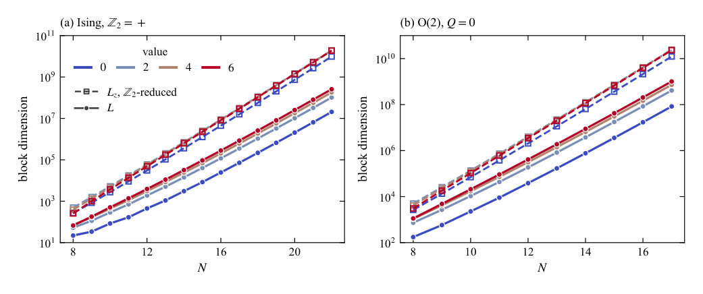
<figcaption class="paper-figure-caption"><b>Fig 1.</b> FIG. 1. Symmetry-block dimensions versus system size for blocks of fixed Lz (dashed, open squares) and of fixed total L (solid, filled circles), at the values 0, 2, 4, 6. (a) Ising, at Z2=+. (b) O(2), at Q=0. Curves show the block each scheme actually diagonalizes. Dashed: the (Lz, Q) block further reduced by the discrete Z2 symmetries implemented in FuzzifiED [15], namely charge conjugation throughout Q = 0 and the π-rotation Ry within Lz = 0. Solid: the full exact-(L, Q) block, which we do not reduce by C since the solver projects inside it.</figcaption>
</figure>
<figure class="paper-figure-card">
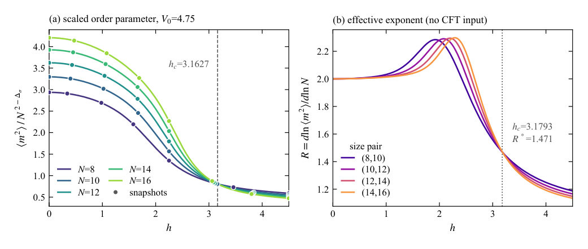
<figcaption class="paper-figure-caption"><b>Fig 2.</b> FIG. 2. Finite-size scaling of the Ising order parameter at V0 = 4.75, from certified emulators at N = 8–16. Here ⟨m2⟩= ∥O |GS⟩∥2 with O = P</figcaption>
</figure>
<figure class="paper-figure-card">
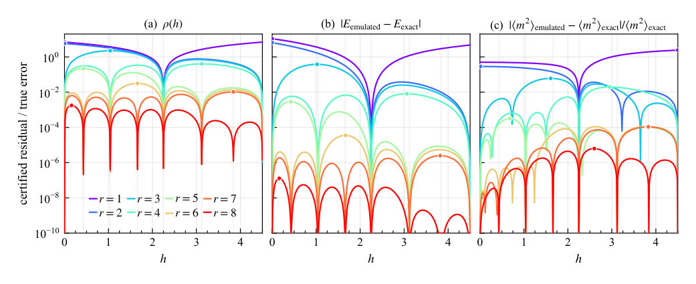
<figcaption class="paper-figure-caption"><b>Fig 3.</b> FIG. 3. The certificate residual against actual energy and order-parameter errors, for the N = 12 Ising emulator on the cut of Fig. 2, where the (L, Z2) = (0, +) block has dimension 448; one colour per greedy iteration r. (a) The certified residual ρ(h) of Eq. (16). (b) The energy error |Eemulated−Eexact| and (c) the relative order-parameter error |⟨m2⟩emulated−⟨m2⟩exact|/⟨m2⟩exact, both against exact solves at every point of the same grid.</figcaption>
</figure>
<figure class="paper-figure-card">
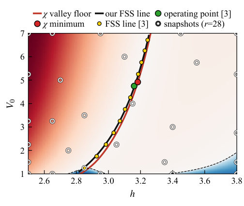
<figcaption class="paper-figure-caption"><b>Fig 4.</b> FIG. 4. Heat map of sign(χ) p</figcaption>
</figure>
<figure class="paper-figure-card">
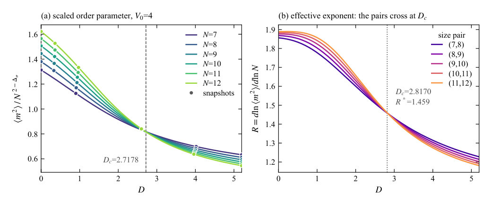
<figcaption class="paper-figure-caption"><b>Fig 5.</b> FIG. 5. Same as Fig. 2 for the O(2) model, at V0 = 4 and N = 7–12, with ⟨m2⟩defined in Sec. IV. Symbols mark the greedy snapshots of the cut emulators (Sec. II C), each grown until the relative change in ⟨m2⟩between consecutive snapshots falls below 10−5: five snapshots at N = 7 and six at every larger size, for sector dimensions 50 to 38 587. (a) The scaled order parameter ⟨m2⟩/N 2−∆σ, with ∆σ = 0.519088 [2] as input: consecutive sizes cross at Dc = 2.6737, 2.6900, 2.7019, 2.7108 and 2.7178, the last from (11, 12) (dashed line). (b) The effective exponent R = d ln⟨m2⟩/d ln N, which uses no CFT input at all: consecutive pairs cross at 2.8575, 2.8398, 2.8269 and 2.8170 (dotted line), with...</figcaption>
</figure>
</div>

<p><strong>Summary.</strong> This work develops a highly efficient computational framework using reduced-basis emulation combined with exact diagonalization to study CFTs on the fuzzy sphere. By accurately mapping the energy landscape across coupling parameters, the authors precisely locate critical points for the Ising and O(2) models. This methodology significantly reduces the search cost for understanding quantum critical phenomena in strongly interacting systems.</p>
<p><strong>Why it may be interesting.</strong> The use of RBM to map out critical lines in parameter space is a powerful computational technique applicable to any quantum system whose Hamiltonian depends smoothly on multiple parameters, bridging the gap between exact diagonalization and full phase diagram mapping.</p>
<details>
<summary>Detailed structure</summary>
<p><strong>Main problem.</strong> To gain numerical access to three-dimensional Conformal Field Theories (CFTs) by efficiently testing for criticality across the vast parameter space of microscopic couplings.</p>
<p><strong>Main result.</strong> The combination of exact diagonalization and a certified reduced-basis emulator successfully reproduces known CFT results for the Ising and O(2) models, locating critical lines with high precision.</p>
<p><strong>Method.</strong> The authors combine exact diagonalization on symmetry-adapted bases with a certified reduced-basis emulator (RBM) to reconstruct energy and observable data continuously across coupling variations, drastically reducing computational cost.</p>
<p><strong>Model / system.</strong> The study focuses on fuzzy-sphere regularizations of 3D CFTs, specifically analyzing the $N_f=2$ Ising model and the $N_f=3$ O(2) Wilson-Fisher CFT. These models are realized via Hamiltonians involving interacting fermions in the Lowest Landau Level.</p>
<p><strong>Key observables.</strong> Ground-state energy ($E_{GS}$), scaling dimensions ($\Delta O$), and the ratio $\chi = E_{3/2}/E_0$ used to locate critical points.</p>
<p><strong>Important parameters / regimes.</strong> Microscopic couplings (e.g., $h$ for Ising, $D$ and $V_0$ for O(2)), and system size $N$.</p>
<p><strong>Assumptions / limitations.</strong> The fuzzy-sphere construction preserves SO(3) symmetry, and the RBM assumes the Hamiltonians are exactly affine in the couplings.</p>
<p><strong>Figures summary.</strong> Figures illustrate the critical lines for the Ising and O(2) models in coupling planes, showing agreement between emulator results and established DMRG values. Other figures show error analysis and energy/order-parameter surfaces.</p>
<p><strong>Paper structure.</strong> The paper develops the computational framework by first detailing the exact-L ED approach, then introducing the RBM for efficient parameter scanning, and finally applying this combined method to determine and map the critical lines for both the Ising and O(2) models using multiple diagnostic criteria.</p>
</details>
<details>
<summary>Abstract</summary>
<p>Fuzzy-sphere regularization gives numerical access to three-dimensional conformal field theories (CFTs), but locating one requires testing for criticality across the parameter space of microscopic couplings. We reduce the search cost by about two orders of magnitude, combining an exact diagonalization based on states having definite total angular momentum with a certified reduced-basis emulator that reconstructs energies, observables and their derivatives continuously across the couplings from a handful of exact solutions per system size. The combination reproduces the published ground-state-energy analysis of the fuzzy-sphere Ising model and the published conformal data of a three-flavor fuzzy-sphere realization of the O(2) Wilson--Fisher CFT, including quantities defined by parameter derivatives. Applied to the O(2) model with no CFT input, the ground-state-energy criterion locates the critical coupling to within half a percent of a density matrix renormalization group value obtained on systems more than twice the size, and maps the critical line of the model across the coupling plane. Ground-state criteria locate the critical line robustly, but the point they select along it is weakly determined, and the computed dimensions come closest to the bootstrap elsewhere along the line.</p>
</details>
<p><sub><a href="#top">↑ back to top</a></sub></p>

<p><a id="paper-2609.10926"></a></p>
<h3 id="competing-interlayer-loop-currents-and-superconductivity-in-the-bilayer-math606math-math607math-math608math-model"><a href="http://arxiv.org/abs/2609.10926v1">Competing Interlayer Loop Currents and Superconductivity in the Bilayer $t$-$J_\perp$-$V$ Model</a></h3>
<p><strong>Authors:</strong> Luciano Zinni, Fabricio Gómez, Jun Zhan, Matías Bejas, Xianxin Wu, Andreas P. Schnyder, Andrés Greco<br>
<strong>Type:</strong> theory · <strong>Category:</strong> strongly correlated electrons · <strong>PDF:</strong> <a href="https://arxiv.org/pdf/2609.10926v1">https://arxiv.org/pdf/2609.10926v1</a><br>
<strong>Analysis basis:</strong> full PDF text, analyzed in chunks
<strong>Topic relevance:</strong> <code>Keldysh / 2PI / non-Gaussian methods</code> <strong>1/5</strong></p>
<div class="figure-strip-hint">↔ Scroll figures horizontally</div>
<div class="paper-figures-scroll">
<figure class="paper-figure-card">
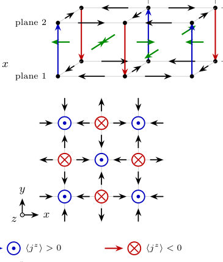
<figcaption class="paper-figure-caption"><b>Fig 1.</b> FIG. 1. Schematic current and flux pattern of the A⊥z-BOP for the commensurate ordering vector (π, π). (a) Three- dimensional view. Blue (red) vertical arrows are the interlayer currents ⟨jz i ⟩&gt; 0 (&lt; 0) on opposite sublattices, generated by the staggered Peierls phase of the effective interlayer hopping. Black arrows are the induced in-plane currents, opposite in the two layers, which close each vertical plaquette into a loop. Green arrows give the local magnetic field B at the plaquette centers, along ±ˆy (±ˆx) for xz (yz) plaquettes and alternating with the sublattice, so that its spatial average vanishes. (b) Top view of plane 1: ⊙(⊗) marks sites where the interlayer current leaves...</figcaption>
</figure>
<figure class="paper-figure-card">
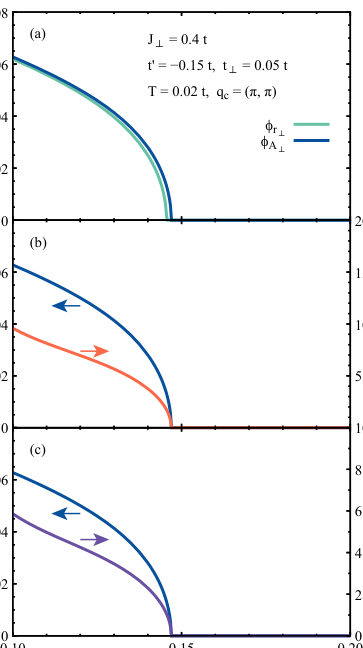
<figcaption class="paper-figure-caption"><b>Fig 2.</b> FIG. 2. (a) Real (ϕr⊥) and imaginary (ϕA⊥) z-BOP gaps vs doping δ, obtained separately. The two channels are nearly degenerate, A⊥being marginally the leading one. (b) Full complex gap ϕ = ϕr⊥+ iϕA⊥, allowing competition: the so- lution is purely imaginary (ϕr⊥negligible). The induced in- plane current |⟨J13⟩| (right axis, in units of 10−4) follows ϕA⊥ (left axis), signaling the LCs of Fig. 1. (c) Orbital magnetic moment m of a single loop (right axis, in units of 10−3µB), which follows ϕA⊥(left axis) and vanishes at the QCP; see Sec. S4 of the SM [23] for details on its estimation.</figcaption>
</figure>
<figure class="paper-figure-card">
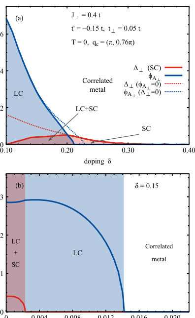
<figcaption class="paper-figure-caption"><b>Fig 3.</b> FIG. 3. (a) Superconducting gap ∆⊥and z-BOP gap ϕA⊥vs doping δ at T = 0, from the coupled gap equations (solid). Dashed lines are the gaps without competition, ∆⊥at ϕA⊥= 0 and ϕA⊥at ∆⊥= 0. ∆⊥shows a dome with optimal doping close to the z-BOP QCP, which the competition shifts to lower δ. Labels indicate the LC, LC+SC, SC, and correlated-metal regions. (b) Both gaps vs temperature at δ = 0.15: ∆⊥is BCS-like (∆⊥= 1.76 Tc), while ϕA⊥= 2.02 T z-BOP c .</figcaption>
</figure>
</div>

<p><strong>Summary.</strong> This theoretical study models high-Tc superconductivity in bilayer nickelates using the $t$-$J_{\perp}$-$V$ model. It finds that an out-of-plane bond-order phase instability generates loop currents that compete with superconductivity. This competition results in a characteristic dome-shaped superconducting phase diagram, suggesting a quantum critical point governs optimal pairing.</p>
<p><strong>Why it may be interesting.</strong> The explicit theoretical modeling of competing orders (charge/orbital vs. superconducting) in a strongly correlated lattice model provides a rich playground for understanding unconventional superconductivity mechanisms, which is a major focus in condensed matter theory.</p>
<details>
<summary>Detailed structure</summary>
<p><strong>Main problem.</strong> The paper investigates the competition between out-of-plane loop currents (LCs) and superconductivity (SC) in bilayer nickelates, a system relevant to high-Tc superconductivity.</p>
<p><strong>Main result.</strong> The out-of-plane bond-order phase ($z$-BOP) instability drives the formation of time-reversal symmetry breaking loop currents, leading to a dome-shaped superconducting region optimal near the $z$-BOP quantum critical point.</p>
<p><strong>Method.</strong> The study employs a controlled large-$N$ expansion, analyzing the self-consistent gap equations for both the superconducting gap ($\Delta_\perp$) and the complex $z$-BOP gap ($\phi$).</p>
<p><strong>Model / system.</strong> The system is modeled by the strongly correlated one-orbital ($ ext{d}_{x^2-y^2}$) bilayer $t$-$J_{\perp}$-$V$ model for nickelates. The Hamiltonian includes hopping, spin exchange ($J_{\perp}$), and Coulomb interactions ($V$).</p>
<p><strong>Key observables.</strong> Superconducting gap ($\Delta_\perp$), $z$-BOP gaps ($\phi_{r\perp}, \phi_{A\perp}$), induced in-plane currents, orbital magnetic moment, and the phase diagram structure.</p>
<p><strong>Important parameters / regimes.</strong> Doping ($\delta$), interlayer exchange coupling ($J_{\perp}$), and the ratio of hopping parameters ($t_{\perp}/t$).</p>
<p><strong>Assumptions / limitations.</strong> The analysis assumes the $z$-BOP gap is purely imaginary ($\phi = i \phi_{A\perp}$), and that Coulomb interactions are less critical than the spin/hopping terms for the primary instabilities.</p>
<p><strong>Figures summary.</strong> Figures illustrate the evolution of the real and imaginary $z$-BOP gaps versus doping, showing the dominance of the imaginary component ($\phi_{A\perp}$), and map out the phase diagram showing LC, SC, and coexisting regions.</p>
<p><strong>Paper structure.</strong> The paper systematically derives the coupled gap equations for SC and $z$-BOP order parameters, analyzes the resulting magnetic flux and current patterns, and maps the resulting phase diagram as a function of doping.</p>
</details>
<details>
<summary>Abstract</summary>
<p>The recent discovery of high-$T_c$ superconductivity in pressurized and thin-film bilayer nickelates, featuring a strong interlayer exchange coupling, and their potential similarities with cuprate superconductors, has made this a very active topic in condensed matter physics. In the present paper we study the strongly correlated one-orbital ($d_{x^2-y^2}$) bilayer $t$-$J_\perp$-$V$ model for nickelates, where $V$ denotes the Coulomb interactions, using a controlled large-$N$ expansion at and beyond the mean-field level. Focusing on the out-of-plane spin exchange interaction ($J_\perp$), we find that it triggers both out-of-plane $s$-wave superconductivity and an out-of-plane bond-order phase ($z$-BOP) instability. The $z$-BOP gives rise to a complex $z$-axis hopping dominated by its imaginary component, which drives out-of-plane currents and induces in-plane ones, spontaneously forming on the vertical plaquettes a loop-current state that breaks time-reversal symmetry. Competition between this loop-current phase and superconductivity yields a dome-shaped superconducting region, with optimal superconductivity occurring near the $z$-BOP quantum critical point. The resulting phase diagram features a pure loop-current region, a low-doping coexistence phase, a pure superconducting state at higher doping, and a correlated metallic state.</p>
</details>
<p><sub><a href="#top">↑ back to top</a></sub></p>

<p><a id="paper-2609.10731"></a></p>
<h3 id="consensus-in-effective-model-inference-for-disordered-ising-systems"><a href="http://arxiv.org/abs/2609.10731v1">Consensus in Effective Model Inference for Disordered Ising Systems</a></h3>
<p><strong>Authors:</strong> Ashveed Ashraf<br>
<strong>Type:</strong> theory · <strong>Category:</strong> disordered systems and neural networks · <strong>PDF:</strong> <a href="https://arxiv.org/pdf/2609.10731v1">https://arxiv.org/pdf/2609.10731v1</a><br>
<strong>Analysis basis:</strong> full PDF text, analyzed in chunks
<strong>Topic relevance:</strong> <code>analog quantum simulation</code> <strong>1/5</strong></p>
<div class="figure-strip-hint">↔ Scroll figures horizontally</div>
<div class="paper-figures-scroll">
<figure class="paper-figure-card">
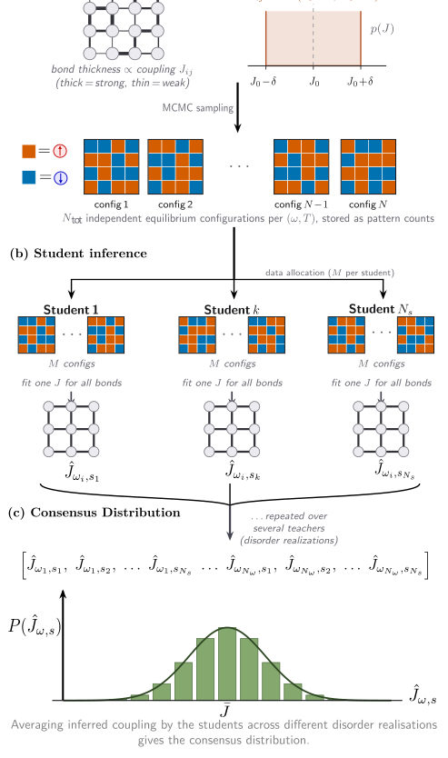
<figcaption class="paper-figure-caption"><b>Fig 1.</b> FIG. 1. Consensus learning framework. (a) A disordered Ising teacher: bonds Jij ∼U(J0 −δ, J0 + δ) are quenched and random for each realization ω. MCMC sampling pro- duces Ntot equilibrium spin configurations per (ω, T), stored as pattern counts. (b) Student inference: each of Ns students, denoted by s, receives M configurations sampled without re- placement from the same teacher ω and infers a single effec- tive coupling ˆJω,s by fitting a uniform Ising model. (c) Con- sensus distribution: aggregating ˆJω,s across all students and all teachers builds the consensus distribution P( ˆJω,s), whose width quantifies how tightly independent learners agree on the effective description of the...</figcaption>
</figure>
<figure class="paper-figure-card">
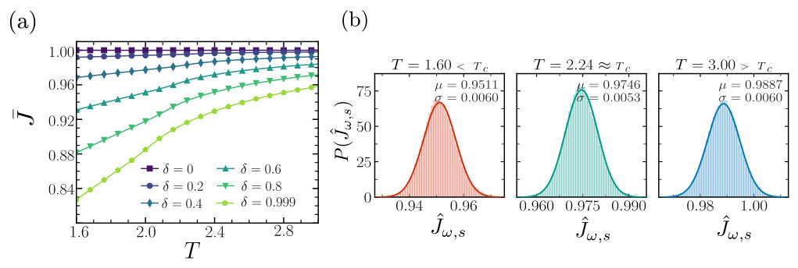
<figcaption class="paper-figure-caption"><b>Fig 2.</b> FIG. 2. Consensus of inferred couplings. (a) Disorder-averaged inferred coupling ¯J against temperature for six disorder strengths δ ∈{0, 0.2, . . . , 0.999}. The clean system recovers ¯J = J0 = 1 at every T, as it must, since a uniform teacher lies inside the students’ hypothesis class. Disorder displaces ¯J downward, most strongly in the ordered phase, and the displacement decreases with temperature. (b) Consensus distribution P( ˆJω,s) at δ = 0.5 for three temperatures spanning the critical region, with a Gaussian fit (solid) to the full set of Nω × Ns inferred couplings. The mean drifts upward with temperature, from 0.9511 to 0.9887, but not reaching J0 within the temperature range used...</figcaption>
</figure>
<figure class="paper-figure-card">
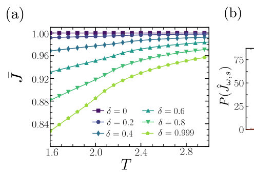
<figcaption class="paper-figure-caption"><b>Fig 3.</b> Fig. 3(a) shows the measured bias over 0.8 ≤T/T eff c ≤ 1.2. It vanishes identically at δ = 0, confirming unbi- asedness in the clean limit, and is negative for all δ &gt; 0, growing in magnitude as δ2 and decaying with tempera- ture in agreement with Eq. (31). The measured bias is negative, thus Tr H(T) &lt; 0, and hence Haa &lt; 0. And thus shows a downward displacement of the best uniform fit, and thus the student underestimates the bond mean. At low temperature the spin configurations a student sees are frozen into patterns controlled by the particu- lar bond realization, so the disorder is fully imprinted on the data and the uniform hypothesis class is badly mis- matched. As the temperature...</figcaption>
</figure>
<figure class="paper-figure-card">
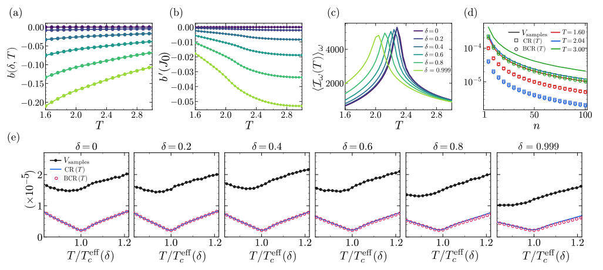
<figcaption class="paper-figure-caption"><b>Fig 4.</b> FIG. 3. Bias, Fisher information, and the Cram´er–Rao bound on the sampling variance, for six disorder strengths δ ∈ {0, 0.2, 0.4, 0.6, 0.8, 0.999} (colour scale in (c)). (a) Measured bias b(δ, T) versus temperature using the finite sample expression in Eq. (31). The bias vanishes at δ = 0 and grows in magnitude with δ. (b) Coupling derivative of the bias b′(J0), evaluated at J0 = 1. It is negative, small (|b′| ≲0.05), and slowly varying, so the prefactor [1 + b′(J0)]2 in the biased Cram´er–Rao bound remains close to unity over the whole temperature range. (c) Disorder-averaged Fisher information Iω(T), which peaks sharply at T eff c (δ), the specific heat maximum, for every disorder...</figcaption>
</figure>
<figure class="paper-figure-card">
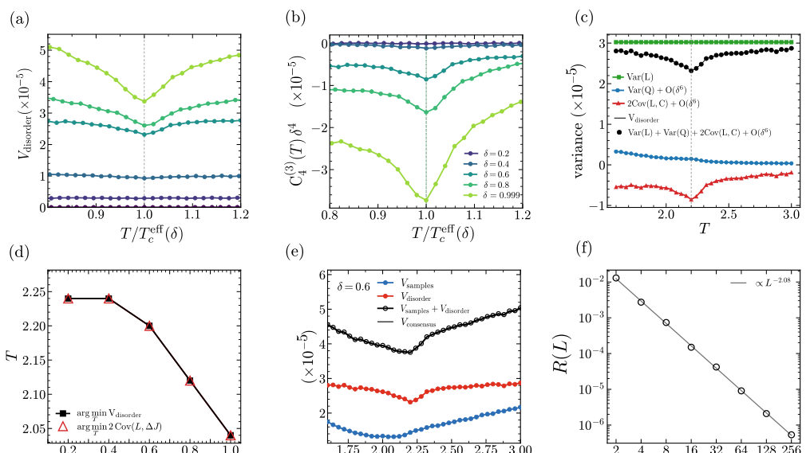
<figcaption class="paper-figure-caption"><b>Fig 5.</b> FIG. 4. Origin of the critical minimum in the disorder variance. Throughout, L, Q and C denote the linear, quadratic and cubic responses of Eq. (47), L = gaηa, Q = 1 2Habηaηb and C = 1 6Θabcηaηbηc, with ηa the offset of bond a from J0. (a) Vdisorder versus scaled temperature for δ ∈{0.2, . . . , 0.999} (color scale used in (b)). The curves are flat at weak disorder and develop a minimum at T/T eff c (δ) that deepens with δ. Values of T eff c (δ) used to scale the axis are the corresponding maxima of specific heat. (b) The linear-cubic covariance 2 Cov(L, C) = C(3) 4 (T)δ4, for the same disorder strengths. It is negative throughout, most negative at T/T eff c (δ) = 0.999. (c) Term-by-term...</figcaption>
</figure>
</div>

<p><strong>Summary.</strong> This work introduces 'consensus' to measure how robustly different models agree on the effective physics of disordered systems. By analyzing the variance of inferred parameters, the authors show that the best temperature for agreement is distinct from the best temperature for accuracy due to model limitations. This provides a crucial diagnostic tool for interpreting results from complex, disordered physical models.</p>
<p><strong>Why it may be interesting.</strong> The rigorous framework for quantifying model uncertainty and disagreement (consensus) in the presence of quenched disorder is highly relevant for interpreting complex simulations in condensed matter theory, especially when data is limited or noisy.</p>
<details>
<summary>Detailed structure</summary>
<p><strong>Main problem.</strong> The paper quantifies the reproducibility of inferred physical descriptions (effective parameters) from finite, noisy data generated by disordered systems, using the concept of 'consensus'.</p>
<p><strong>Main result.</strong> The temperature at which independent learners agree most closely (consensus minimum) is generally different from the temperature where their shared answer is most faithful (MSE minimum) due to inherent model misspecification bias.</p>
<p><strong>Method.</strong> A teacher-student framework is employed where multiple students independently infer a single effective coupling from finite subsets of equilibrium configurations generated by a disordered Ising system.</p>
<p><strong>Model / system.</strong> The system is the two-dimensional random-bond Ising model on a square lattice with quenched couplings drawn from a uniform distribution. The inference process involves fitting a single uniform effective coupling to the local field statistics.</p>
<p><strong>Key observables.</strong> Consensus Width (variance), Mean-Squared Error (MSE), Sampling Noise variance, Quenched-Disorder variance, Residual Complexity (RC).</p>
<p><strong>Important parameters / regimes.</strong> Disorder strength ($\delta$), Temperature ($T$), Finite sample size ($M$), and the number of students ($N_s$).</p>
<p><strong>Assumptions / limitations.</strong> The students are restricted to fitting a single uniform effective coupling, which introduces a systematic misspecification bias that persists even in the infinite-data limit.</p>
<p><strong>Figures summary.</strong> Figures compare the inferred coupling $ar{J}$ across different kernels, showing consistency at certain temperatures, and illustrate Residual Complexity (RC), which is zero for the isotropic kernel but non-zero for the identity kernel, indicating lost structure.</p>
<p><strong>Paper structure.</strong> The paper develops the consensus concept by decomposing the total variance into sampling and disorder contributions. It then analyzes the bias introduced by the limited hypothesis class, comparing the optimal temperature for consensus agreement versus optimal faithfulness (MSE).</p>
</details>
<details>
<summary>Abstract</summary>
<p>When independent learners are trained on data from the same disordered system, finite and noisy samples can lead them to different descriptions of the underlying physics. We quantify the reproducibility of such descriptions through consensus, the degree of agreement among independently trained models. In a teacher-student framework on the two-dimensional random-bond Ising model, an ensemble of students each infers a single uniform effective coupling from a finite set of equilibrium configurations drawn from one quenched bond realization. Aggregating the inferred couplings across students and realizations yields the consensus distribution, whose width quantifies the agreement among learners. The variance of this distribution separates exactly into a finite-sampling contribution, bounded below by inverse of Fisher information, and a quenched-disorder contribution. Sum of these two variance is minimized near critical region, so the consensus width has a minimum near the pseudocritical temperature that sharpens with increasing disorder. The two minima arise from different mechanisms: the sampling term inherits the critical peak of the Fisher information, while the disorder term is temperature-independent at leading order and acquires its critical minimum only at fourth order in the disorder strength, through the covariance between the linear and cubic responses to the bond disorder. Because the students fit a uniform coupling to a heterogeneous lattice, the inferred coupling also carries a misspecification bias that survives in the infinite-data limit. This bias displaces the minimum of the mean-squared error above the consensus minimum, so the temperature at which independent learners agree most closely is not the temperature at which their shared answer is most faithful.</p>
</details>
<p><sub><a href="#top">↑ back to top</a></sub></p>

<p><a id="paper-2609.11394"></a></p>
<h3 id="disordered-ground-states-in-one-dimensional-exactly-solvable-fluids"><a href="http://arxiv.org/abs/2609.11394v1">Disordered ground states in one-dimensional exactly solvable fluids</a></h3>
<p><strong>Authors:</strong> Igor Travěnec, Ladislav Šamaj<br>
<strong>Type:</strong> theory · <strong>Category:</strong> statistical mechanics · <strong>PDF:</strong> <a href="https://arxiv.org/pdf/2609.11394v1">https://arxiv.org/pdf/2609.11394v1</a><br>
<strong>Analysis basis:</strong> full PDF text, analyzed in chunks
<strong>Topic relevance:</strong> <code>Frenkel-Kontorova</code> <strong>1/5</strong></p>
<div class="figure-strip-hint">↔ Scroll figures horizontally</div>
<div class="paper-figures-scroll">
<figure class="paper-figure-card">
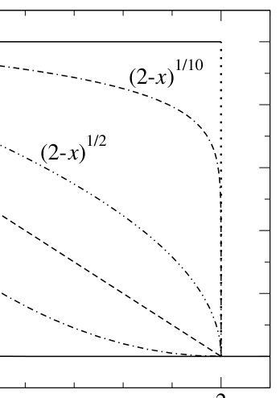
<figcaption class="paper-figure-caption"><b>Fig 1.</b> Figure 1. Some of the interaction potentials (1.4), with parameters a = 1, a′ = 2 and ε = 1. The case ϕ = 1 is denoted as shoulder, ϕ = 2 −x as linear and ϕ = (2 −x)2 as quadratic.</figcaption>
</figure>
<figure class="paper-figure-card">
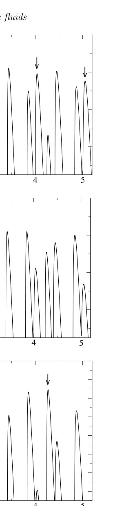
<figcaption class="paper-figure-caption"><b>Fig 2.</b> Figure 2. Square shoulder potential (ν →∞) with parameters a = 1, a′ = √</figcaption>
</figure>
<figure class="paper-figure-card">
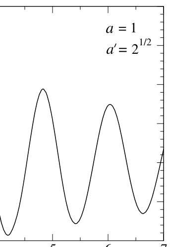
<figcaption class="paper-figure-caption"><b>Fig 3.</b> Figure 3. Dependence of the ground-state correlation function g0 on the distance x for the linear ramp model (4.1) with parameters a = 1, a′ = √</figcaption>
</figure>
<figure class="paper-figure-card">
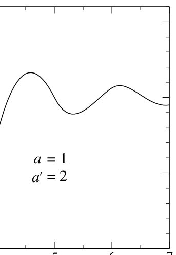
<figcaption class="paper-figure-caption"><b>Fig 4.</b> Figure 4. Dependence of the ground-state correlation function g0 on the distance x for the linear ramp model (4.1) with parameters a = 1, a′ = 2, ε = 1 and under the incompressibility pressure pi = 1. The inequality 2a′ &gt; 3a holds in this model. A detailed description of the plot can be found in the text.</figcaption>
</figure>
<figure class="paper-figure-card">
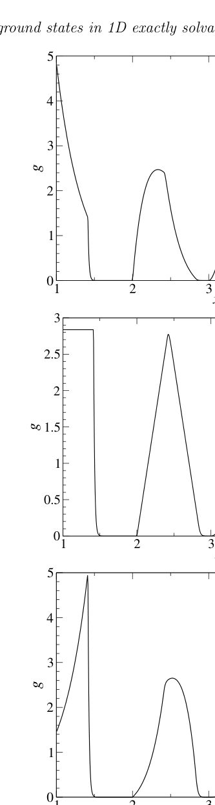
<figcaption class="paper-figure-caption"><b>Fig 5.</b> Figure 5. The linear ramp potential with parameters a = 1, a′ = √</figcaption>
</figure>
</div>

<p><strong>Summary.</strong> This theoretical paper analyzes the ground states of 1D fluids with soft repulsive interactions. It establishes that disordered ground states only exist for potentials that are concave ($
u \ge 1$) at a critical pressure $p_i$. These disordered states are non-hyperuniform and exhibit correlation functions that predict behavior over a wider range of temperatures and pressures.</p>
<p><strong>Why it may be interesting.</strong> The finding that disordered ground states can be precisely characterized by non-zero susceptibility and extended to finite temperatures provides a theoretical bridge between zero-temperature quantum/classical ground states and finite-temperature liquid behavior.</p>
<details>
<summary>Detailed structure</summary>
<p><strong>Main problem.</strong> The study investigates the existence and properties of disordered ground states in one-dimensional (1D) exactly solvable fluids.</p>
<p><strong>Main result.</strong> Disordered ground states exist only for concave potentials ($
u \ge 1$) at a specific incompressibility pressure ($p_i$), characterized by non-zero isothermal susceptibility and non-hyperuniformity.</p>
<p><strong>Method.</strong> The analysis uses the isothermal-isobaric ensemble, employing Laplace transforms and the steepest descent method to analyze the $T 	o 0$ limit of the equation of state and pair correlation function.</p>
<p><strong>Model / system.</strong> The system consists of 1D fluids of classical hard-core particles interacting via a soft, repulsive, finite-range potential $\phi(x)$. The interactions are simplified to nearest-neighbor interactions when the interaction range $a'$ is small relative to the particle diameter $a$.</p>
<p><strong>Key observables.</strong> Equation of state, mean nearest-neighbor distance ($l_0$), pair correlation function ($g_0(x)$), and isothermal susceptibility ($\chi_T$).</p>
<p><strong>Important parameters / regimes.</strong> The potential exponent $
u$ (determining concavity/convexity), the incompressibility pressure $p_i$, and the temperature $T$ (analyzed in the $T 	o 0$ limit).</p>
<p><strong>Assumptions / limitations.</strong> The analysis assumes the pairwise interactions reduce to nearest-neighbor interactions ($a' \le 2a$) and relies on the exact solvability of the model in the isothermal-isobaric ensemble.</p>
<p><strong>Figures summary.</strong> Figures illustrate the pair correlation function $g(x)$ for different pressures around $p_i$, showing transitions between disordered, $a$-periodic, and $a'$-periodic behavior for the square shoulder potential.</p>
<p><strong>Paper structure.</strong> The paper systematically analyzes the ground state behavior by examining the potential's concavity ($
u$ vs. 1), identifying the critical pressure $p_i$, and deriving the specific forms of $l_0$ and $g_0(x)$ for the resulting ordered and disordered phases.</p>
</details>
<details>
<summary>Abstract</summary>
<p>One-dimensional fluids of classical hard-core particles of diameter $a$, interacting in pairs via a soft repulsive (monotonically decreasing) potential of finite range $\varphi(x)=\varepsilon \left[ (a'-x)/(a'-a)\right]^{1/ν}$ $(a\le x\le a')$ with real positive parameters $\varepsilon$ and $ν$, are studied in an isothermal-isobaric ensemble. If $a'\le 2a$, the pairwise interactions are reduced to nearest-neighbour interactions, which allows for an exact solution of the thermal equilibrium. We focus on the $T\to 0$ ground states, specifically on the equation of state for the mean distance between nearest neighbours $l_0$ and the pair correlation function $g_0(x)$. If $\varphi(x)$ is concave $(ν\ge 1)$, there exists an ``incompressibility'' pressure $p_i=\varepsilon/(a'-a)$ such that the ground state is an equidistant chain of particles with spacing $l_0=a'$ for $0<p<p_i$ and with spacing $l_0=a$ for $p>p_i$. If $ν>1$ (strict concavity), the ground state at $p=p_i$ is disordered with $l_0=\left[ νa +(ν-1)a'\right]/(2ν-1)$ and $g_0(x)$ being a superposition of weighted Dirac delta functions over discrete positions. If $ν=1$ (linear ramp), the ground state at $p=p_i$ is disordered with $l_0=(a+a')/2$ and the continuous $g_0(x)$ is a superposition of Heaviside step functions multiplied by polynomials in $x$. The isothermal susceptibility at $T=0$ is nonzero for concave $\varphi(x)$ ($ν\ge 1$) at $p=p_i$ and, therefore, the corresponding disordered ground states are non-hyperuniform, i.e., they resemble disordered fluids at nonzero temperatures. It turns out that pair correlation functions of disordered ground states, which occur only at a single pressure $p_i$, extend their predictive power to thermodynamic states at nonzero temperatures over a wider range of pressures around $p_i$.</p>
</details>
<p><sub><a href="#top">↑ back to top</a></sub></p>

<p><a id="paper-2609.11901"></a></p>
<h3 id="efi-pairs-without-one-way-puzzles-oracle-separations-from-communication-complexity"><a href="http://arxiv.org/abs/2609.11901v1">EFI Pairs Without One-Way Puzzles: Oracle Separations from Communication Complexity</a></h3>
<p><strong>Authors:</strong> Atul Mantri<br>
<strong>Type:</strong> theory · <strong>Category:</strong> quantum information and computing · <strong>PDF:</strong> <a href="https://arxiv.org/pdf/2609.11901v1">https://arxiv.org/pdf/2609.11901v1</a><br>
<strong>Analysis basis:</strong> full PDF text, analyzed in chunks
<strong>Topic relevance:</strong> <code>quantum measurements</code> <strong>1/5</strong></p>
<div class="figure-strip-hint">↔ Scroll figures horizontally</div>
<div class="paper-figures-scroll">
<figure class="paper-figure-card">
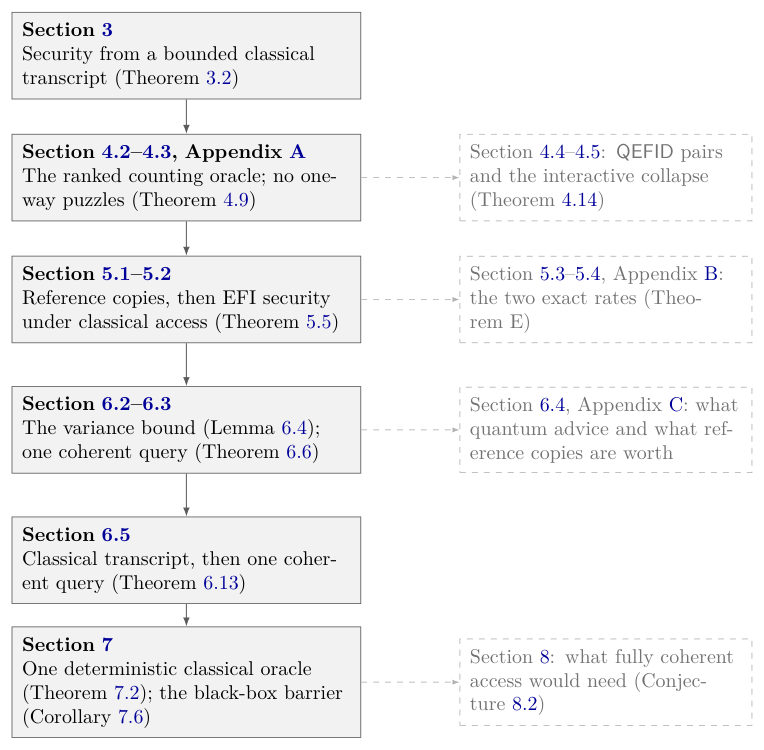
<figcaption class="paper-figure-caption"><b>Fig 1.</b> Figure 1: Dependency structure. Solid boxes are used in the proof of Theorem 7.2; dashed boxes are not.</figcaption>
</figure>
</div>

<p><strong>Summary.</strong> This paper tackles the relationship between two key quantum cryptographic assumptions: EFI pairs and one-way puzzles. By constructing a specific oracle, the authors prove that one can have quantum states that are hard to distinguish classically without relying on the existence of one-way puzzles. The work rigorously bounds the quantum advantage using communication complexity and random matrix theory.</p>
<p><strong>Why it may be interesting.</strong> It provides deep theoretical insights into the computational assumptions underpinning quantum cryptography, showing that certain quantum advantages might vanish when the input/output structure is restricted to classical information.</p>
<details>
<summary>Detailed structure</summary>
<p><strong>Main problem.</strong> The paper investigates whether the existence of EFI pairs (a quantum cryptographic primitive) necessitates the existence of one-way puzzles, a fundamental open question in quantum cryptography.</p>
<p><strong>Main result.</strong> The authors construct a scenario relative to a specific oracle where EFI pairs exist without one-way puzzles, demonstrating that quantum polynomial time offers no advantage on tasks with purely classical inputs and outputs.</p>
<p><strong>Method.</strong> The security proof relies on reducing the distinguishing advantage problem to classical communication complexity, specifically the Vector-in-Subspace problem, and uses random matrix theory for the final coherent query bound.</p>
<p><strong>Model / system.</strong> The model involves analyzing the indistinguishability of two quantum states (an EFI pair) relative to an oracle that provides classical query answers about quantum samplers, all within a 'Coherent-last access' computational model.</p>
<p><strong>Key observables.</strong> Distinguishing advantage ($    ext{Advantage}$), trace distance ($   ext{TD}$), and the bias of the quantum state separation.</p>
<p><strong>Important parameters / regimes.</strong> The parameter $\lambda$ governing the state preparation, the dimension $n$ of the subspace, and the number of queries $L$.</p>
<p><strong>Assumptions / limitations.</strong> The analysis is restricted to the 'Coherent-last access' model, and the paper concludes by stating conjectures to remove the restriction on superposition queries.</p>
<p><strong>Figures summary.</strong> No figures were explicitly described in the notes, but the analysis relies on bounding sums over different cell size regimes and using various mathematical lemmas (e.g., Lemma 6.15).</p>
<p><strong>Paper structure.</strong> The paper establishes the problem setup using EFI pairs and one-way puzzles, then introduces the oracle model. The core is the security proof, which proceeds by reducing the advantage to communication complexity (Theorem C) and bounding the coherent query advantage using random matrix theory (Theorem D).</p>
</details>
<details>
<summary>Abstract</summary>
<p>EFI pairs (Brakerski, Canetti, and Qian, ITCS 2023) and one-way puzzles (Khurana and Tomer, STOC 2024) are the leading candidates for the minimal assumption of quantum cryptography. The first are efficiently preparable quantum states, statistically far yet computationally indistinguishable; the second are classical puzzles, easy to sample and hard to solve. One-way puzzles imply EFI pairs, and whether the converse holds is open.   We construct a single classical oracle relative to which one-way puzzles do not exist, even with an unbounded verifier, while an EFI pair survives every distinguisher that queries the oracle classically throughout and holds advice about it, making its one superposition query at the end. The oracle answers every question about the output probabilities of quantum samplers, which removes the puzzles, and hides a Haar-random half-dimensional subspace.   To prove security we reduce it to communication complexity. An adversary whose knowledge of the subspace arrives as classical query answers can be simulated inside a two-party protocol against the party holding it, so it does no better than the best classical protocol for Vector-in-Subspace (Klartag and Regev, STOC 2011), whatever the oracle computes. That argument does not cover the superposition query, which we bound instead using tools from random matrix theory.   The same attack gives a classical simulation of any quantum party in a classical-message protocol with no entanglement shared in advance, so relative to the oracle there is no proof of quantumness either. Quantum polynomial time therefore offers no advantage on any task with classical inputs and outputs, while the two quantum states stay indistinguishable. We state conjectures on removing the restriction on superposition queries.</p>
</details>
<p><sub><a href="#top">↑ back to top</a></sub></p>

<p><a id="paper-2609.11138"></a></p>
<h3 id="fingerprints-of-excitonic-collective-modes-in-the-two-dimensional-electron-gas"><a href="http://arxiv.org/abs/2609.11138v1">Fingerprints of Excitonic Collective Modes in the Two-Dimensional Electron Gas</a></h3>
<p><strong>Authors:</strong> Jakob Wolff, Silvana Botti, Lucia Reining, Matteo Gatti<br>
<strong>Type:</strong> theory · <strong>Category:</strong> strongly correlated electrons · <strong>PDF:</strong> <a href="https://arxiv.org/pdf/2609.11138v1">https://arxiv.org/pdf/2609.11138v1</a><br>
<strong>Analysis basis:</strong> full PDF text, analyzed in chunks
<strong>Topic relevance:</strong> <code>Keldysh / 2PI / non-Gaussian methods</code> <strong>1/5</strong></p>
<div class="figure-strip-hint">↔ Scroll figures horizontally</div>
<div class="paper-figures-scroll">
<figure class="paper-figure-card">
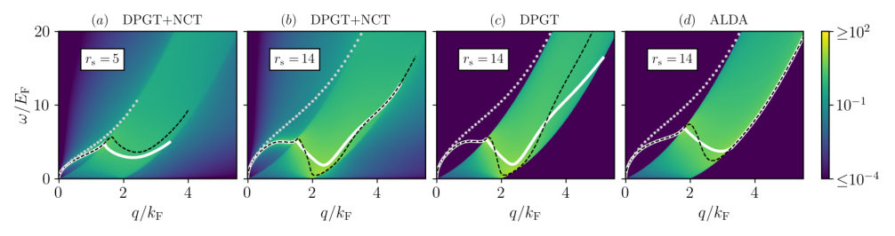
<figcaption class="paper-figure-caption"><b>Fig 1.</b> Figure 1. Loss functions for (a) rs = 5 and (b)-(d) rs = 14, obtained using (a)-(b) the DPGT+NCT (see text), (c) the DPGT, and (d) the ALDA xc kernels. The collective modes ωc(q) are depicted by solid white lines, while the RPA plasmon is shown by light grey dots. The lines stop when the collective modes cease to exist. The black dashed line denotes the maximum of the loss function. In panel (a) and (b), the dashed line terminates because the loss function develops a double-peak structure, and the high energy peak around ω/EF ≈25 becomes more intense than the lower-energy structure.</figcaption>
</figure>
<figure class="paper-figure-card">
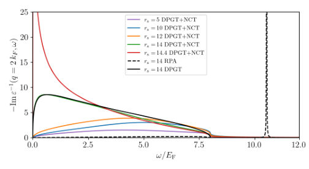
<figcaption class="paper-figure-caption"><b>Fig 2.</b> Figure 2. Loss functions at q = 2kF. The DPGT+NCT loss functions for different rs are shown by colored solid lines. The DPGT as well as the RPA loss functions are shown for rs = 14 and represented by a solid and dashed black line, respectively. In the RPA, almost all spectral weight is in the plasmon peak, while the DPGT(+NCT) spectra develop asymmetric peaks inside the particle-hole continuum.</figcaption>
</figure>
<figure class="paper-figure-card">
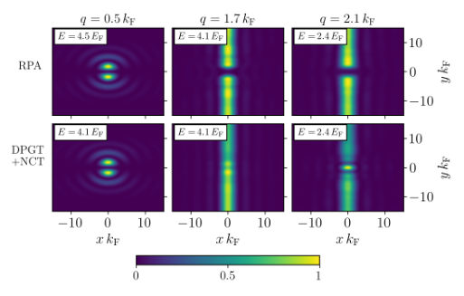
<figcaption class="paper-figure-caption"><b>Fig 3.</b> Figure 3. Electron-hole correlation function: electron distri- bution around a hole at the origin, for a wavevector q in y direction and rs = 14. Upper panels: RPA. Lower panels: DPGT+NCT. The left panel, for q = 0.5kF, shows the plas- mon. The next two panels show results for wavevector and energy where the collective mode in DPGT+NCT is inside the continuum and close to its left border, or close to the minimum of the mode dispersion, respectively. The intensi- ties in all panels are normalized to their respective maximum. For DPGT and ALDA see [104] Fig. S3.</figcaption>
</figure>
<figure class="paper-figure-card">
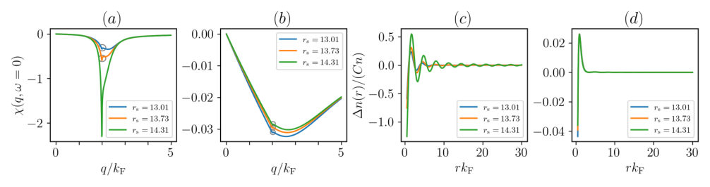
<figcaption class="paper-figure-caption"><b>Fig 4.</b> Figure 4. (a),(b) Static linear density response χ(q, ω = 0) and (c),(d) corresponding density ∆n(r)/(Cn) induced by a point perturbation potential V (r) = Cδ(r), normalized to the perturbation strength and density. All results are shown for 3 values of rs. Panels (a) and (c) are results of DPGT, panels (b) and (d) are results of RPA. The rs values have been chosen to be 90, 95, 99% of the approximated critical rs where an instability is found in DPGT (see text). Note the change in scale between DPGT and RPA. The circles in (a) and (b) highlight the small needle-shaped superposed structures associated to the derivative singularity at 2kF of the response function. Since the static response...</figcaption>
</figure>
</div>

<p><strong>Summary.</strong> This work uses TDDFT to explore collective charge excitations in the 2DEG, finding that excitonic modes appear at low densities, distinct from simple plasmons. The theory predicts that these modes signal an instability towards a charge-density-wave phase when the electron density drops sufficiently low. The findings offer concrete, measurable fingerprints for experimental detection in tunable 2D electron systems.</p>
<p><strong>Why it may be interesting.</strong> The detailed study of collective excitations and instability mechanisms in a fundamental model system like the 2DEG provides crucial theoretical benchmarks for understanding strongly correlated electron behavior in low-dimensional materials.</p>
<details>
<summary>Detailed structure</summary>
<p><strong>Main problem.</strong> The study investigates the existence and experimental signatures of excitonic collective charge excitations in the Two-Dimensional Electron Gas (2DEG) at low densities.</p>
<p><strong>Main result.</strong> New excitonic modes emerge beyond traditional plasmons at low densities, and the system is predicted to become unstable towards a charge-density-wave (CDW) phase when the Wigner-Seitz radius exceeds a critical value.</p>
<p><strong>Method.</strong> The research employs Time-Dependent Density Functional Theory (TDDFT) within the framework of the Casida equation, comparing results across various approximations for the exchange-correlation (xc) kernel.</p>
<p><strong>Model / system.</strong> The physical system is the two-dimensional homogeneous electron gas (2D HEG), a model system whose properties are tunable by varying the electron density via the Wigner-Seitz radius ($r_s$).</p>
<p><strong>Key observables.</strong> Loss function ($   ext{Im} \epsilon^{-1}(q, \omega)$), static linear density response ($\chi(q, \omega=0)$), and induced density oscillations ($\Delta n(r)$).</p>
<p><strong>Important parameters / regimes.</strong> Wigner-Seitz radius ($r_s$), wavevector ($q$), and frequency ($\omega$). The critical instability is predicted around $r_s \gtrsim 14.455$.</p>
<p><strong>Assumptions / limitations.</strong> The analysis relies on approximations for the xc kernel, comparing RPA, ALDA, DPGT, and DPGT+NCT, with the most detailed results using the DPGT+NCT parametrization.</p>
<p><strong>Figures summary.</strong> Figures illustrate the development of asymmetric peak structures in the loss function and strong Friedel-like oscillations in the static response function as $r_s$ increases, particularly near $q=2k_F$.</p>
<p><strong>Paper structure.</strong> The paper systematically compares the predictions of various theoretical approximations (RPA vs. DPGT+NCT) for collective excitations, focusing on how excitonic effects manifest in the loss function and the static density response, culminating in the prediction of a CDW instability.</p>
</details>
<details>
<summary>Abstract</summary>
<p>The two-dimensional homogeneous electron gas (2D HEG) is a prototype system of fundamental interest that can be realized experimentally over a wide range of densities. Here, we investigate its collective charge excitations at low densities, using time-dependent density functional theory. We demonstrate that, beyond traditional plasmons, new collective excitonic modes emerge for a Wigner-Seitz radius larger than $r_{\mathrm s} \approx 1$. These excitonic modes leave characteristic fingerprints in experimentally accessible quantities, namely, asymmetric peak structures in the loss function and very strong Friedel-like oscillations in the static linear density response that increase when the system approaches a regime of instability. Indeed, at low enough densities the collective modes cross the zero energy axis, indicating an instability of the paramagnetic 2D HEG towards the formation of a charge-density-wave phase with excitonic origin. These findings provide valuable insights for the experimental detection of excitonic collective modes in tunable 2D electron systems and contribute to the fundamental understanding of many-body effects in low-density electron gases.</p>
</details>
<p><sub><a href="#top">↑ back to top</a></sub></p>

<p><a id="paper-2609.11930"></a></p>
<h3 id="hierarchy-of-renyi-coherent-information-in-stabilizer-codes"><a href="http://arxiv.org/abs/2609.11930v1">Hierarchy of Rényi Coherent Information in Stabilizer Codes</a></h3>
<p><strong>Authors:</strong> Akash Vijay, Luis Colmenarez, Jong Yeon Lee<br>
<strong>Type:</strong> theory · <strong>Category:</strong> quantum information and computing · <strong>PDF:</strong> <a href="https://arxiv.org/pdf/2609.11930v1">https://arxiv.org/pdf/2609.11930v1</a><br>
<strong>Analysis basis:</strong> full PDF text, analyzed in chunks
<strong>Topic relevance:</strong> <code>quantum measurements</code> <strong>1/5</strong></p>
<div class="figure-strip-hint">↔ Scroll figures horizontally</div>
<div class="paper-figures-scroll">
<figure class="paper-figure-card">
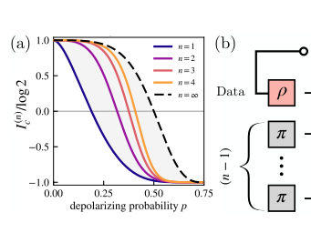
<figcaption class="paper-figure-caption"><b>Fig 1.</b> FIG. 1. (a) Rényi hierarchy. Exact Rényi-n coherent infor- mation for the [[5, 1, 3]] code under depolarizing noise with to- tal nonidentity probability p, with qX = qY = qZ = p/3. The hi- erarchy holds for every finite stabilizer code under independent- event Pauli noise, but can fail for more general Pauli channels. (b) Postselection gadget. One arbitrary logical data state and n −1 maximally mixed logical ancilla states are encoded into separate blocks. Each block undergoes the same noise channel and syndrome measurement. Retaining only matching syndrome outcomes implements the trace-nonincreasing map; when the success probability is input-independent, division by this probability yields...</figcaption>
</figure>
</div>

<p><strong>Summary.</strong> This paper analyzes the Rényi coherent information in quantum error correction codes, proving that under specific noise conditions (independent Bernoulli faults), this information measure is nondecreasing with the Rényi index $n$. It also provides an operational interpretation by linking the information measure to the fidelity of quantum channel recovery via syndrome postselection.</p>
<p><strong>Why it may be interesting.</strong> The work provides rigorous mathematical tools to analyze the performance limits of quantum error correction codes under realistic noise models by establishing concrete, computable hierarchies for entanglement measures.</p>
<details>
<summary>Detailed structure</summary>
<p><strong>Main problem.</strong> The paper addresses two shortcomings of Rényi coherent information ($I_c^{(n)}$): its lack of monotonicity in the Rényi index $n$ and its lack of clear operational meaning compared to the von Neumann case.</p>
<p><strong>Main result.</strong> For Pauli noise from independent Bernoulli events, the Rényi coherent information is proven to be nondecreasing in $n$. Furthermore, an operational meaning is established via postselection on matching syndromes, linking saturation of $I_c^{(n)}$ to perfect channel recovery.</p>
<p><strong>Method.</strong> The authors employ information-theoretic tools, including Rényi entropy calculations, correlation inequalities (like Harris's), and analyzing the structure of syndrome-conditioned quantum channels.</p>
<p><strong>Model / system.</strong> The study focuses on stabilizer codes subjected to Pauli noise, considering both independent Bernoulli noise and general stochastic Pauli noise models.</p>
<p><strong>Key observables.</strong> Rényi coherent information ($I_c^{(n)}$), the Rényi deficit ($\Delta_n$), and the recovery fidelity ($F_n$).</p>
<p><strong>Important parameters / regimes.</strong> The Rényi index $n$, the noise model (Bernoulli vs. general stochastic Pauli noise), and the code structure.</p>
<p><strong>Assumptions / limitations.</strong> The initial hierarchy proof relies on the assumption that the Pauli noise is generated by independent Bernoulli events; counterexamples show failure when this assumption is violated.</p>
<p><strong>Figures summary.</strong> Figure 1(a) illustrates the nondecreasing Rényi hierarchy for a code under depolarizing noise, while Figure 1(b) depicts the postselection gadget using one data block and $n-1$ auxiliary blocks.</p>
<p><strong>Paper structure.</strong> The paper proceeds by first proving the nondecreasing hierarchy for independent Bernoulli noise, then defining the operational meaning via matched-syndrome postselection, and finally analyzing the conditions (like $n$-balance) under which these bounds and equivalences hold.</p>
</details>
<details>
<summary>Abstract</summary>
<p>Rényi coherent information, a computable proxy for the von Neumann coherent information, is widely used to study mixed-state phases of matter and decodability transitions in noisy quantum error-correcting codes. However, being a difference of two Rényi entropies, it need not be monotonic in the Rényi index, and lacks the operational meaning of its von Neumann counterpart. Here we address both issues for stabilizer codes. First, for Pauli noise generated by independent Bernoulli events, we prove that the Rényi-$n$ coherent information is nondecreasing in $n \in \mathbb{Z}^+$. This follows from a general theorem: if independent random bits are mapped linearly to a fine label $T$ and a coarse label $C$, then the Rényi entropy difference $H_n(C)-H_n(T)$ is nondecreasing in $n$. For stabilizer codes, $T$ is the joint syndrome--logical class and $C$ is the syndrome, and the difference is the Rényi-$n$ coherent information up to a constant. The same theorem covers classical linear codes and independent detector error models. Second, for arbitrary stochastic Pauli noise, we give the Rényi-$n$ coherent information an operational meaning via postselection on matching syndromes between one data block and $n-1$ auxiliary blocks. We determine when this defines a quantum channel and show that saturation of the Rényi-$n$ coherent information is equivalent to asymptotically perfect recovery of the postselected channel. Moreover, the Rényi-$n$ coherent information also upper-bounds the ordinary coherent information achievable after any syndrome-conditioned recovery.</p>
</details>
<p><sub><a href="#top">↑ back to top</a></sub></p>

<p><a id="paper-2609.10948"></a></p>
<h3 id="irrationality-measure-controls-long-wavelength-charge-fluctuations-in-quasiperiodic-systems"><a href="http://arxiv.org/abs/2609.10948v1">Irrationality Measure Controls Long-Wavelength Charge Fluctuations in Quasiperiodic Systems</a></h3>
<p><strong>Authors:</strong> Junmo Jeon, Shiro Sakai<br>
<strong>Type:</strong> theory · <strong>Category:</strong> disordered systems and neural networks · <strong>PDF:</strong> <a href="https://arxiv.org/pdf/2609.10948v1">https://arxiv.org/pdf/2609.10948v1</a><br>
<strong>Analysis basis:</strong> full PDF text, analyzed in chunks
<strong>Topic relevance:</strong> <code>Frenkel-Kontorova</code> <strong>1/5</strong></p>
<div class="figure-strip-hint">↔ Scroll figures horizontally</div>
<div class="paper-figures-scroll">
<figure class="paper-figure-card">
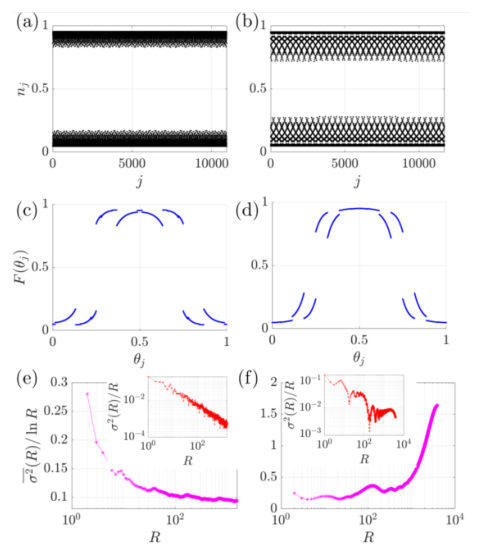
<figcaption class="paper-figure-caption"><b>Fig 1.</b> FIG. 1. (a,b) Spatial distribution of the local density nj in the Aubry–Andr´e model [Eq. (6)], calculated for λ = 3t, EF = 0 and different β’s. (c,d) Hull charge profile F(θj), where θj = jβ mod 1. Both are piecewisely regular with finitely many jumps. (e,f) σ2(R)/ ln R as the function of win- dow radius R. Here, σ2(R) = R−1 R R 0 σ2(R′)dR′ is the run- ning average of σ2(R). The insets show σ2(R)/R which van- ishes for large R. (a,c,e) β = 6765/10946 which is continued fraction approximant of golden ratio with µ = 2. The system size is 10946. (b,d,f) β = 28517/11724 = [2; 2, 3, 5, 10, 31] with µ ≈2.5794. The system size is 11724.</figcaption>
</figure>
</div>

<p><strong>Summary.</strong> This work establishes that the long-wavelength charge fluctuations in quasiperiodic systems are fundamentally controlled by the arithmetic properties of the irrational modulation frequency $eta$. It derives a scaling law linking the fluctuation exponent to both the frequency's irrationality measure and the smoothness of the system's charge profile. This provides a deep theoretical link between number theory and condensed matter physics.</p>
<p><strong>Why it may be interesting.</strong> The explicit connection between number theory (irrationality measure) and physical transport/fluctuation properties in quasiperiodic lattices provides a powerful, non-trivial diagnostic tool for characterizing the underlying order.</p>
<details>
<summary>Detailed structure</summary>
<p><strong>Main problem.</strong> The paper determines the fundamental principle governing long-wavelength charge fluctuations in quasiperiodic systems, linking it directly to the arithmetic properties of the irrational modulation frequency.</p>
<p><strong>Main result.</strong> The scaling of infrared charge fluctuations is governed by a relationship involving the system's regularity exponent ($r$) and the irrationality measure ($\mu(eta)$) of the frequency, specifically $\alpha + 1 = 2r / (\mu(eta) - 1)$.</p>
<p><strong>Method.</strong> The analysis uses Fourier decomposition and scaling arguments to relate the integrated low-momentum weight (charge fluctuations) to the arithmetic properties of the quasiperiodicity.</p>
<p><strong>Model / system.</strong> The study focuses on translation-covariant quasiperiodic systems, exemplified by the Aubry-André model, described by Hamiltonians $H(	heta)$ modulated by an irrational frequency $eta$.</p>
<p><strong>Key observables.</strong> Charge fluctuation variance $\sigma^2(R)$, integrated infrared weight $Z(K)$, and the hyperuniformity class $\alpha$.</p>
<p><strong>Important parameters / regimes.</strong> Irrationality measure $\mu(eta)$, regularity exponent $r$, and the modulation frequency $eta$.</p>
<p><strong>Assumptions / limitations.</strong> The analysis assumes the relevant hull Fourier amplitudes obey an algebraic decay bound $|c_m| \lesssim |m|^{-r}$ and that the spectral gap is stable for the deep sector contribution to be negligible.</p>
<p><strong>Figures summary.</strong> Figures illustrate the charge distribution and the running average of the charge variance $\sigma_2(R)$ for different irrational frequencies ($\phi$ vs. another irrational).</p>
<p><strong>Paper structure.</strong> The paper establishes the physical link between arithmetic properties ($\mu(eta)$) and physical observables (charge fluctuations), deriving the central scaling relation by analyzing the contributions from near-Fermi states versus the deep spectral gap.</p>
</details>
<details>
<summary>Abstract</summary>
<p>Quasiperiodic order is characterized by irrational frequencies whose rational approximability known as irrationality measure defines distinct arithmetic classes. We establish that this arithmetic classification has direct physical consequences for long-wavelength charge fluctuations. In translation-covariant quasiperiodic systems, the infrared scaling of charge fluctuation is governed by the interplay between the irrationality exponent of irrational frequency and the large-harmonic decay of the hull charge profile: the latter determines the available charge weight, while the former controls how efficiently that weight is transferred to the infrared. Consequently, all algebraic irrational frequencies share the same arithmetic scaling, whereas exceptionally well-approximable transcendental frequencies can exhibit strongly enhanced infrared fluctuation scaling. We further prove that occupied states separated from the Fermi level by a gap stable throughout the hull contribute only an analytic infrared background, leaving the nontrivial scaling to near-Fermi states. Our results extend to general translation-covariant multi-frequency quasiperiodic systems.</p>
</details>
<p><sub><a href="#top">↑ back to top</a></sub></p>

<p><a id="paper-2609.10676"></a></p>
<h3 id="krylov-edge-spectroscopy-of-symmetry-protected-topological-phases"><a href="http://arxiv.org/abs/2609.10676v1">Krylov Edge Spectroscopy of Symmetry-Protected Topological Phases</a></h3>
<p><strong>Authors:</strong> Heiko Georg Menzler, Rishabh Jha<br>
<strong>Type:</strong> theory · <strong>Category:</strong> other · <strong>PDF:</strong> <a href="https://arxiv.org/pdf/2609.10676v1">https://arxiv.org/pdf/2609.10676v1</a><br>
<strong>Analysis basis:</strong> full PDF text, analyzed in chunks
<strong>Topic relevance:</strong> <code>analog quantum simulation</code> <strong>1/5</strong></p>
<div class="figure-strip-hint">↔ Scroll figures horizontally</div>
<div class="paper-figures-scroll">
<figure class="paper-figure-card">
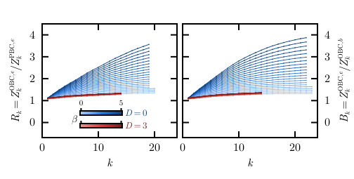
<figcaption class="paper-figure-caption"><b>Fig 1.</b> FIG. 1. Depth flow of the spin-1 boundary-selectivity ratios at L = 8 as β varies from 0 to 5. Blue curves show AKLT (D = 0) and red curves large-D (D = 3); increasing β enhances the AKLT boundary contrast while the large-D response remains near unity. The left and right panels show RK = ZOBC K /ZPBC K and BK = Zboundary K /Zbulk K , respectively.</figcaption>
</figure>
<figure class="paper-figure-card">
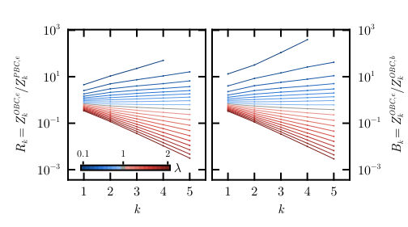
<figcaption class="paper-figure-caption"><b>Fig 2.</b> FIG. 2. Depth flow of the cluster-chain boundary-selectivity ratios at L = 12 as λ is varied across the transition at λ = 1. In the SPT regime λ &lt; 1, RK and BK grow strongly with depth, whereas in the trivial regime λ &gt; 1 they remain near or below unity. The left and right panels show RK = ZOBC K /ZPBC K and BK = Zboundary K /Zbulk K , respectively.</figcaption>
</figure>
</div>

<p><strong>Summary.</strong> The authors present Krylov Edge Spectroscopy, a novel, local diagnostic tool to characterize Symmetry-Protected Topological phases in 1D quantum systems. By analyzing the spectral properties of boundary operators via Krylov recursion, the method detects topological protection without requiring full diagonalization. This technique successfully classifies phases by relating boundary dynamics to fundamental topological invariants like cohomology labels.</p>
<p><strong>Why it may be interesting.</strong> This provides a powerful, purely local, and computationally tractable diagnostic tool to probe global topological invariants in 1D quantum systems, which is highly relevant for understanding boundary physics in condensed matter systems.</p>
<details>
<summary>Detailed structure</summary>
<p><strong>Main problem.</strong> The paper introduces Krylov Edge Spectroscopy to develop a method for detecting and classifying one-dimensional Symmetry-Protected Topological (SPT) phases.</p>
<p><strong>Main result.</strong> The method successfully maps the transition between topological and trivial phases to a localization-delocalization transition of the Krylov edge mode, and it can recover exact cohomology labels for models like the clock chain.</p>
<p><strong>Method.</strong> It uses a many-body operator-space protocol based on Krylov recursion applied to local boundary observables, avoiding the need for exact diagonalization or entanglement spectra.</p>
<p><strong>Model / system.</strong> The analysis is performed on one-dimensional systems, including cluster, clock, Haldane, and spin-1 chains, using finite-range Hamiltonians in the Gibbs state.</p>
<p><strong>Key observables.</strong> Zero-frequency normalizability criterion, boundary ratios ($R_K, B_K$), leakage residual ($\epsilon_K$), and the minimum stiffness ($\kappa_{\min}$) for classification.</p>
<p><strong>Important parameters / regimes.</strong> The Krylov depth ($K$), the system size ($L$), and the symmetry group structure ($\mathbb{Z}_N 	imes \mathbb{Z}_N$ or $D_2$).</p>
<p><strong>Assumptions / limitations.</strong> The method assumes the existence of a unique self-adjoint realization for the infinite tridiagonal operator and relies on the exponential locality of 1D Gibbs states.</p>
<p><strong>Paper structure.</strong> The paper follows a logical progression: first, establishing the theoretical framework via Krylov recursion and boundary tests for detection; second, detailing the classification procedure by minimizing local commutator norms across symmetry sectors; and finally, demonstrating the protocol's success on benchmark models like the clock and spin-1 chains.</p>
</details>
<details>
<summary>Abstract</summary>
<p>We introduce $Krylov$ $edge$ $spectroscopy$, a many-body operator-space protocol for detecting and classifying one-dimensional symmetry-protected topological phases from local boundary dynamics. A Hermitian boundary operator generates a semi-infinite Krylov hopping chain whose boundary weight obeys an exact zero-frequency normalizability criterion. Open-periodic, boundary-bulk, and symmetry-preserving boundary-perturbation tests identify protected boundary memory, while a finite-depth leakage residual certifies when an explicitly reconstructed operator is already near zero frequency. Classification minimizes the normalized commutator over symmetry-resolved boundary operators in fixed charge sectors. For bosonic $\mathbb{Z}_N \times \mathbb{Z}_N$ phases, the recovered endpoint charge gives the cohomology label. The method requires neither many-body exact diagonalization, an explicit ground-state wavefunction or entanglement spectrum, nor a guessed dressed edge or string operator. For finite-range Hamiltonians, locality organizes the thermodynamic limit at fixed Krylov depth before the depth limit. We demonstrate the protocol in cluster, clock, Haldane, and trivial spin-1 chains. In the exactly solvable cluster chain, the transition between the gapped topological and trivial phases manifests as a localization-delocalization transition of the Krylov edge mode on the Krylov chain. This transition occurs precisely at the bulk gap closing, and its localization-length exponent coincides with the Ising correlation-length exponent. Through operator Krylov dynamics, our work turns local boundary evolution into a direct spectroscopy of many-body topology.</p>
</details>
<p><sub><a href="#top">↑ back to top</a></sub></p>

<p><a id="paper-2609.10684"></a></p>
<h3 id="quantum-state-of-a-gravitating-spacetime-region"><a href="http://arxiv.org/abs/2609.10684v1">Quantum State of a Gravitating Spacetime Region</a></h3>
<p><strong>Authors:</strong> Raphael Bousso, Sami Kaya, Guanda Lin, Arvin Shahbazi-Moghaddam<br>
<strong>Type:</strong> theory · <strong>Category:</strong> other · <strong>PDF:</strong> <a href="https://arxiv.org/pdf/2609.10684v1">https://arxiv.org/pdf/2609.10684v1</a><br>
<strong>Analysis basis:</strong> full PDF text, analyzed in chunks
<strong>Topic relevance:</strong> <code>quantum measurements</code> <strong>1/5</strong></p>
<div class="figure-strip-hint">↔ Scroll figures horizontally</div>
<div class="paper-figures-scroll">
<figure class="paper-figure-card">
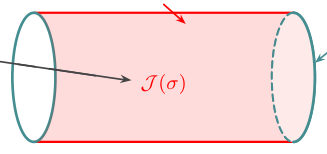
<figcaption class="paper-figure-caption"><b>Fig 1.</b> Figure 1. Given a (d+1)-dimensional Lorentzian wedge wσ, we construct a (non-unique) quantum state J (σ) that gives rise to wσ in the classical limit. (a) A d-dimensional Cauchy slice Σ of wσ is deformed to a submanifold J(σ) in the complexification of wσ. In this example, the shared boundary σ of Σ and J(σ) has two components, σ = χ ⊔χc. (b) Of the full phase space data induced on J(σ), we retain only the conformal data ([hab], K) in the interior of J(σ), and the full (d −1)-metric γpq|σ on σ. These assignments turn J(σ) into an elliptic data manifold J (σ). — Conversely, we regard any elliptic data manifold J (σ), with arbitrary complex ([hab], K) and real γpq|σ, as a quantum state....</figcaption>
</figure>
<figure class="paper-figure-card">
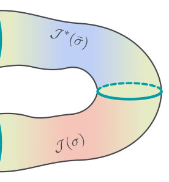
<figcaption class="paper-figure-caption"><b>Fig 2.</b> Figure 3. The closed elliptic data manifold trχ[˜ρ(χ, ¯χ)2] is obtained by cyclic gluing (here, across the vertical plane) of two copies of ˜ρ(χ, ¯χ) (see Fig. 2).</figcaption>
</figure>
<figure class="paper-figure-card">
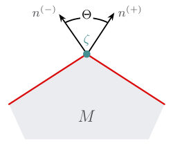
<figcaption class="paper-figure-caption"><b>Fig 3.</b> Figure 4. GPI with mixed-conformal boundary data. (a) On a closed d-manifold J(∅) = ∂M with (d −1)-dimensional submanifold ζ, we specify the full metric γpq on ζ and ([hab], K) on J(∅) \ ζ. Together, J(∅) and these data comprise the closed elliptic data manifold J (∅). In the example shown, ζ has two components, referred to as joints. The GPI is over spacetimes (M, gij) that induce these data on their boundary. (b) Local geometry at a joint ζ. The limiting outward normals n(−) and n(+) determine the exterior angle Θ. The illustrated joint is convex and has Θ &gt; 0.</figcaption>
</figure>
<figure class="paper-figure-card">
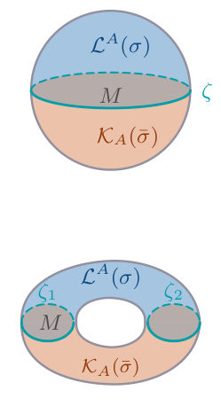
<figcaption class="paper-figure-caption"><b>Fig 4.</b> Figure 5. Elliptic data manifolds with boundary and their gluing. In panel (a), σ is connected: the underlying manifolds J(σ) and K(¯σ) are disks and glue across σ to form a sphere. In panel (b), σ = σ1⊔σ2 has two connected components: the underlying manifolds are cylinders and glue along both circular boundaries to form a torus. Cyan marks the gluing loci, blue and orange mark the data-equipped elliptic data manifolds J A(σ) and KA(¯σ), and the pale region shows one possible bulk filling M. The GPI sums over fillings. Setting K = J ∗gives G[(J ∗)AJ A] = ⟨J , J ⟩.</figcaption>
</figure>
<figure class="paper-figure-card">
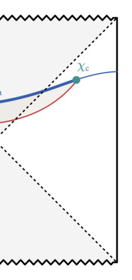
<figcaption class="paper-figure-caption"><b>Fig 5.</b> Figure 6. BTZ black hole of radius r1. A global maximal-volume slice (thin blue) with minimum radius ra &lt; r1 contains the partial Cauchy slice Σ (thick blue), which is bounded by circles χ and χc at r = R in the left and right exteriors. A deformation of Σ off the real Lorentzian sector yields the underlying preparation manifold J(σ), with boundary σ = χ ⊔χc. Together with the induced mixed-conformal data, it defines the EDM J (σ).</figcaption>
</figure>
</div>

<p><strong>Summary.</strong> This work proposes a novel framework linking quantum states in quantum gravity to specific, finite Lorentzian spacetime regions. It defines quantum states using elliptic data manifolds and calculates entanglement entropy by relating it to geometric quantities like the maximin surface area. This offers a powerful, general tool for exploring quantum information structure in regimes beyond standard holographic assumptions.</p>
<p><strong>Why it may be interesting.</strong> While focused on quantum gravity, the rigorous calculation of entanglement entropy via geometric quantities (maximin surface) and the development of a general state formalism are highly relevant to understanding quantum information structure in curved spacetime, which underpins many-body physics concepts.</p>
<details>
<summary>Detailed structure</summary>
<p><strong>Main problem.</strong> The paper aims to establish a fundamental correspondence between quantum states defined on a boundary manifold and the geometry of finite Lorentzian spacetime regions in quantum gravity.</p>
<p><strong>Main result.</strong> A broad correspondence is proposed linking quantum states $J(\sigma)$ to Lorentzian wedges $w_\sigma$, and the von Neumann entropy is shown to be controlled by the maximin surface area, echoing holographic principles.</p>
<p><strong>Method.</strong> The framework defines quantum states using elliptic data manifolds and calculates entanglement entropy via partial traces and the Gravitational Path Integral (GPI) evaluated on closed manifolds.</p>
<p><strong>Model / system.</strong> The system involves defining a gravitational Hilbert space $\mathbf{H}_\sigma$ associated with a compact boundary $\sigma$, and analyzing the quantum state $\mathcal{J}(\sigma)$ which is a $d$-manifold bounded by $\sigma$.</p>
<p><strong>Key observables.</strong> Rényi entropies ($S_n$) and the von Neumann entropy ($S_1$), which are predicted to be proportional to the maximin surface area.</p>
<p><strong>Important parameters / regimes.</strong> The gravitational coupling constant $G_N$, the dimension $d$, and the geometry of the boundary $\sigma$.</p>
<p><strong>Assumptions / limitations.</strong> The framework assumes the Hilbert space factorizes over connected components of $\sigma$, and the classical limit requires the GPI to be dominated by a single saddle geometry with Lorentzian fixed points.</p>
<p><strong>Figures summary.</strong> Figures illustrate the construction of quantum states via complex deformations from Lorentzian wedges, the calculation of reduced states via partial gluing, and the comparison of actions between Euclidean and Wall saddles.</p>
<p><strong>Paper structure.</strong> The paper develops the mathematical framework by defining the Hilbert space and state structure, establishing the correspondence to classical spacetime regions, and then applying this structure to compute entanglement entropy for specific examples like black hole boundaries.</p>
</details>
<details>
<summary>Abstract</summary>
<p>We associate a gravitational Hilbert space $\mathbf{H}_σ$ to any closed compact $(d-1)$-manifold $σ$ with real metric. A quantum state $\mathcal{J}(σ)$ is a $d$-manifold bounded by $σ$ and equipped with elliptic data. An inner product is defined by gluing states pairwise across $σ$ and evaluated by viewing the resulting closed $d$-manifold as a boundary condition on the gravitational path integral (GPI) over $(d+1)$-manifolds.   If $σ$ is nonempty and the GPI is dominated by a single $(d+1)$-manifold $M$ in the $G_N\to 0$ limit, then $M$ contains a Lorentzian CRT fixed-point set, providing $\mathcal{J}(σ)$ with a classical spacetime interpretation. Conversely, given a finite Lorentzian domain with edge $σ$, a state $\mathcal{J}(σ)$ may be associated to it by deforming its initial data off the real Lorentzian section and retaining only elliptic data. This establishes a broad correspondence between non-asymptotic spacetime regions and quantum states.   Assuming that $\mathbf{H}_σ$ factorizes over connected components of $σ$, our framework admits operators and partial traces. This allows us to explore the information-theoretic structure of the states we define. As an example, we construct a family of states by deforming partial Cauchy slices $Σ$ that straddle a two-sided black hole; $σ$ consists of two spheres. We construct the reduced state on one sphere and find that its Rényi entropies are positive, monotonic, and sensitive to all aspects of $Σ$ and its complex deformation. The von Neumann entropy, however, is controlled only by the maximin surface in the causal domain of $Σ$, independently of other parameters, so long as the complex deformation does not vanish. Our proposal may thus explain the efficacy of tensor network toy models of holography while transcending their limitations.</p>
</details>
<p><sub><a href="#top">↑ back to top</a></sub></p>

<p><a id="paper-2609.10974"></a></p>
<h3 id="sample-optimal-learning-of-stabilizer-states"><a href="http://arxiv.org/abs/2609.10974v1">Sample-optimal learning of stabilizer states</a></h3>
<p><strong>Authors:</strong> Rebecca Chang, Matthias C. Caro, Martin Larocca, Maxwell West<br>
<strong>Type:</strong> theory · <strong>Category:</strong> quantum information and computing · <strong>PDF:</strong> <a href="https://arxiv.org/pdf/2609.10974v1">https://arxiv.org/pdf/2609.10974v1</a><br>
<strong>Analysis basis:</strong> full PDF text, analyzed in chunks
<strong>Topic relevance:</strong> <code>quantum measurements</code> <strong>1/5</strong></p>
<div class="figure-strip-hint">↔ Scroll figures horizontally</div>
<div class="paper-figures-scroll">
<figure class="paper-figure-card">
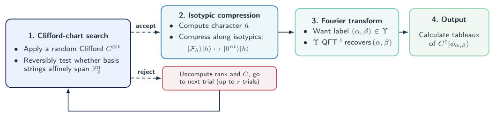
<figcaption class="paper-figure-caption"><b>Fig 1.</b> Figure 1. Overview of our stabilizer-learning algorithm, which has four core stages. In stage one we reduce the problem to that of learning a stabilizer state which has support on all computational basis strings; such “full-rank” states enjoy certain nice algebraic properties which we are able to exploit. In particular, they are exactly the orbit on the state |+⟩⊗n of a certain representation of the abelian group Υ ∼= Zn 4 × F n(n−1)/2 2 . The test (correctly) rejecting a rank-deficient state is non-destructive, so that the test can be uncomputed and another trial performed; the test (incorrectly) rejecting a full-support causes the algorithm to fail (not depicted in the figure). In stage...</figcaption>
</figure>
</div>

<p><strong>Summary.</strong> This paper provides a rigorous determination of the sample complexity required to learn an unknown n-qubit stabilizer state. It introduces a novel, efficient quantum algorithm that achieves the optimal scaling for this task. The work is significant for quantum information theory as it provides tight bounds and a practical method for characterizing quantum states.</p>
<p><strong>Why it may be interesting.</strong> While focused on quantum computation, the rigorous analysis of state learning complexity and the use of Fourier analysis on group structures provide deep theoretical tools applicable to characterizing entanglement and resource estimation in quantum many-body systems.</p>
<details>
<summary>Detailed structure</summary>
<p><strong>Main problem.</strong> The paper determines the minimum number of copies required to learn an unknown pure n-qubit stabilizer state and subsequently derives the complexity for learning associated Clifford unitaries.</p>
<p><strong>Main result.</strong> They establish tight bounds for the sample complexity, $L_\delta(n) \approx n + \log(1/\delta)$, and present a polynomial-time quantum algorithm that saturates these bounds.</p>
<p><strong>Method.</strong> The approach uses a multi-stage quantum algorithm involving reduction to a full-support state, isotypic compression, and applying the Quantum Fourier Transform over a specific abelian group structure.</p>
<p><strong>Model / system.</strong> The system under study is the $n$-qubit stabilizer state, which are specific quantum states generated by the Clifford group acting on computational basis states.</p>
<p><strong>Key observables.</strong> The primary observable is the sample complexity, $L_\delta(n)$, which quantifies the minimum number of state copies needed for successful identification.</p>
<p><strong>Important parameters / regimes.</strong> The key parameters are the number of qubits ($n$), the failure probability ($\delta$), and the structure of the underlying abelian group $\Upsilon$.</p>
<p><strong>Assumptions / limitations.</strong> The analysis assumes the ability to implement random Clifford operations and relies on bounding probabilities using techniques like the Hellinger overlap.</p>
<p><strong>Figures summary.</strong> Figure 1 provides an overview of the four core stages of the proposed stabilizer-learning algorithm, detailing the sequence of operations from state reduction to tableau reconstruction.</p>
<p><strong>Paper structure.</strong> The paper follows a logical progression: first, establishing the problem bounds; second, detailing the four-stage quantum algorithm (reduction, compression, Fourier transform, reconstruction); and finally, analyzing the computational complexity of each step.</p>
</details>
<details>
<summary>Abstract</summary>
<p>It is well-known that learning a pure $n$-qubit stabilizer state $|ψ\rangle$ both requires, and can be accomplished with, access to a number of copies of $|ψ\rangle$ linear in $n$. However, the precise constant coefficient of this scaling does not appear to have been determined. Here we prove that $L_δ(n)$, the smallest number of copies from which a quantum procedure can identify any stabilizer state with failure probability at most $0<δ<1/8$, satisfies $n+\lceil\log_2(1/δ)\rceil-3\leq L_δ(n)\leq n+\left\lceil\log_2(1/δ)\right\rceil+4$. We present a polynomial-time quantum learning algorithm that saturates this bound, achieving a constant factor improvement in sample-complexity over previously known approaches. As an immediate corollary, we obtain via the Choi-Jamiolkowski isomorphism an algorithm for learning an unknown $n$-qubit Clifford unitary from $2n+\left\lceil\log_2(1/δ)\right\rceil+4$ queries, the $n$-dependence of which we show to be optimal. Our proof technique, which involves Fourier analysis on the abelian group $\mathbb{Z}_4^n \times \mathbb{F}_2^{n(n-1)/2}$, seems to be qualitatively different to previous approaches to stabilizer state learning, and may be of some independent interest; in particular, it admits natural generalisations to further problems in quantum learning theory.</p>
</details>
<p><sub><a href="#top">↑ back to top</a></sub></p>

<p><a id="paper-2609.10829"></a></p>
<h3 id="selected-coupled-cluster-guided-by-selected-configuration-interaction"><a href="http://arxiv.org/abs/2609.10829v1">Selected Coupled Cluster Guided by Selected Configuration Interaction</a></h3>
<p><strong>Authors:</strong> Minsik Cho, Troy Van Voorhis<br>
<strong>Type:</strong> theory · <strong>Category:</strong> strongly correlated electrons · <strong>PDF:</strong> <a href="https://arxiv.org/pdf/2609.10829v1">https://arxiv.org/pdf/2609.10829v1</a><br>
<strong>Analysis basis:</strong> full PDF text, analyzed in chunks
<strong>Topic relevance:</strong> <code>analog quantum simulation</code> <strong>1/5</strong></p>
<div class="figure-strip-hint">↔ Scroll figures horizontally</div>
<div class="paper-figures-scroll">
<figure class="paper-figure-card">
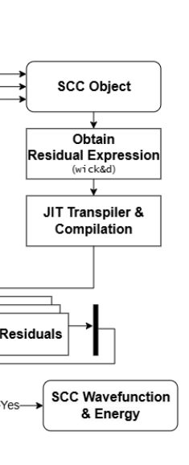
<figcaption class="paper-figure-caption"><b>Fig 1.</b> Figure 1: Flowchart of SCC Implementation</figcaption>
</figure>
<figure class="paper-figure-card">
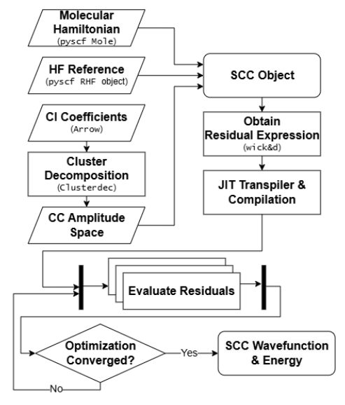
<figcaption class="paper-figure-caption"><b>Fig 2.</b> Figure 1 illustrates the combined workflow for SCC calculations. PySCF34 provides the</figcaption>
</figure>
<figure class="paper-figure-card">
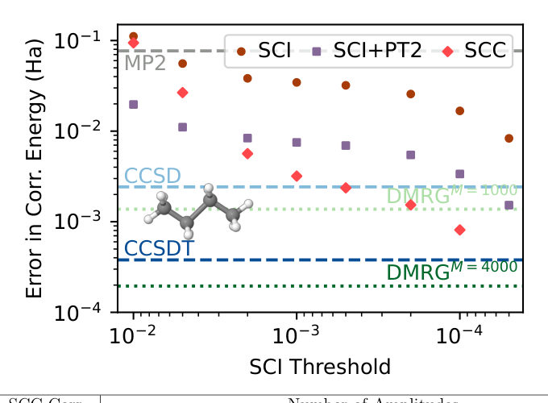
<figcaption class="paper-figure-caption"><b>Fig 3.</b> Figure 2: (Top) Error in correlation energy relative to extrapolated DMRG for butane (Bottom) SCC amplitude count (in spin orbitals) and raw correlation energies</figcaption>
</figure>
<figure class="paper-figure-card">
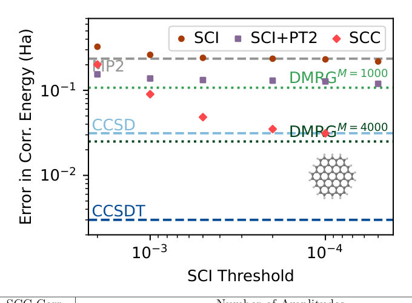
<figcaption class="paper-figure-caption"><b>Fig 4.</b> Figure 3: (Top) Error in correlation energy relative to extrapolated SCC energy for circum- coronene (Bottom) SCC amplitude count (in spin orbitals) and raw correlation energies</figcaption>
</figure>
<figure class="paper-figure-card">
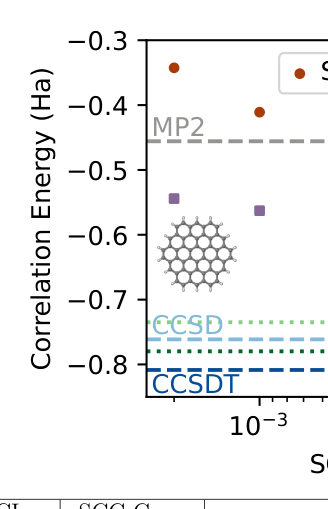
<figcaption class="paper-figure-caption"><b>Fig 5.</b> Figure 4: (Top) Correlation energy of stretched circumcoronene (Bottom) SCC amplitude count (in spin orbitals) and raw correlation energies</figcaption>
</figure>
</div>

<p><strong>Summary.</strong> This paper presents Selected Coupled Cluster (SCC), a novel, sparse quantum chemistry method designed to overcome the computational limitations of high-rank Coupled Cluster theory. SCC leverages the sparsity inherent in Selected Configuration Interaction (SCI) wavefunctions to guide the optimization of CC amplitudes. It demonstrates that SCC provides highly accurate and rapidly converging energy estimates, making it a powerful, drop-in enhancement for modern electronic structure calculations.</p>
<p><strong>Why it may be interesting.</strong> While focused on quantum chemistry, the development of highly efficient, sparse, and systematic many-body wavefunction methods like SCC provides algorithmic insights applicable to simulating strongly correlated quantum materials.</p>
<details>
<summary>Detailed structure</summary>
<p><strong>Main problem.</strong> The computational cost scaling of high-rank Coupled Cluster (CC) theory limits its application for accurate electronic structure calculations.</p>
<p><strong>Main result.</strong> Selected Coupled Cluster (SCC) is introduced as an efficient, arbitrary-order sparse CC method that outperforms standard SCI and CCSD in the tight-threshold regime.</p>
<p><strong>Method.</strong> SCC solves the CC residual equations by optimizing amplitudes within a compact, sparse amplitude space guided by a modern Selected Configuration Interaction (SCI) wavefunction.</p>
<p><strong>Model / system.</strong> The method applies to electronic structure problems governed by the time-independent Schrödinger Equation, using molecular systems like butane and circumcoronene as benchmarks.</p>
<p><strong>Key observables.</strong> Energy (E), convergence rate, and the number of selected amplitudes required for convergence.</p>
<p><strong>Important parameters / regimes.</strong> The SCI variational threshold ($\epsilon_{var}$), which guides the amplitude selection; the rank of the CC excitations (T).</p>
<p><strong>Assumptions / limitations.</strong> The core assumption is that the sparsity of the ground-state wavefunction can be effectively exploited by guiding the CC amplitude space using SCI methods.</p>
<p><strong>Figures summary.</strong> Figures show the error in correlation energy relative to extrapolated DMRG energy for butane, and the relationship between SCC amplitude count and the SCI threshold for various systems.</p>
<p><strong>Paper structure.</strong> The paper introduces SCC as an enhancement to SCI workflows, details the implementation using sparse data structures and JIT compilation, and benchmarks its performance against SCI, CCSD, CCSDT, and DMRG across several chemical systems.</p>
</details>
<details>
<summary>Abstract</summary>
<p>Coupled Cluster (CC) theory is one of the most popular correlated wavefunction methods, yet the steep computational cost scaling of CC truncated at higher rank limits its application. Modern Selected Configuration Interaction (SCI) methods successfully exploit the sparsity of ground-state wavefunctions in the determinant space, motivating an analogous approach with the exponential CC ansatz. In this work, we introduce Selected Coupled Cluster (SCC), an arbitrary-order sparse CC method that explicitly solves the CC residual equations within a compact amplitude space guided by an SCI wavefunction. SCC optimizes the CC amplitudes in the sparse amplitude space. Using a pilot Just-in-Time (JIT) compiled implementation, we benchmark SCC against SCI, SCI+PT2, standard rank-truncated dense CC (CCSD, CCSDT), and DMRG across various chemical systems. We demonstrate that SCC exhibits fast, monotonic convergence with the SCI variational threshold, outperforming SCI and surpassing SCI+PT2 in the tight-threshold regime. SCC also provides accurate energies for high-dimensional topologies, where DMRG typically converges slowly with bond dimension. SCC thus presents an efficient drop-in enhancement for modern SCI workflows.</p>
</details>
<p><sub><a href="#top">↑ back to top</a></sub></p>

<p><a id="paper-2609.11847"></a></p>
<h3 id="the-cost-of-simulating-classically-tractable-quantum-circuits-and-dynamics"><a href="http://arxiv.org/abs/2609.11847v1">The cost of simulating classically tractable quantum circuits and dynamics</a></h3>
<p><strong>Authors:</strong> Su Yeon Chang, Supanut Thanasilp, Zoë Holmes, M. Cerezo<br>
<strong>Type:</strong> theory · <strong>Category:</strong> quantum information and computing · <strong>PDF:</strong> <a href="https://arxiv.org/pdf/2609.11847v1">https://arxiv.org/pdf/2609.11847v1</a><br>
<strong>Analysis basis:</strong> full PDF text, analyzed in chunks
<strong>Topic relevance:</strong> <code>analog quantum simulation</code> <strong>1/5</strong></p>
<div class="figure-strip-hint">↔ Scroll figures horizontally</div>
<div class="paper-figures-scroll">
<figure class="paper-figure-card">
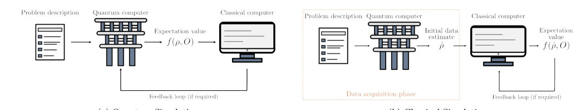
<figcaption class="paper-figure-caption"><b>Fig 1.</b> Figure 1. Schematic description of Quantum and Classical Simulations. a) In Quantum Simulation, each circuit instance is executed directly on the quantum hardware and the corresponding expectation value is estimated from quantum measurements. When required, a classical computer updates the circuit parameters between evaluations. b) In CS, the quantum evolution is replaced by a classical surrogate. If the required information about the initial state is not known classically, it is obtained during an initial quantum data-acquisition stage and subsequently reused by the Classical Simulation for different circuit instances (e.g. for different simulation times or parameter values).</figcaption>
</figure>
<figure class="paper-figure-card">
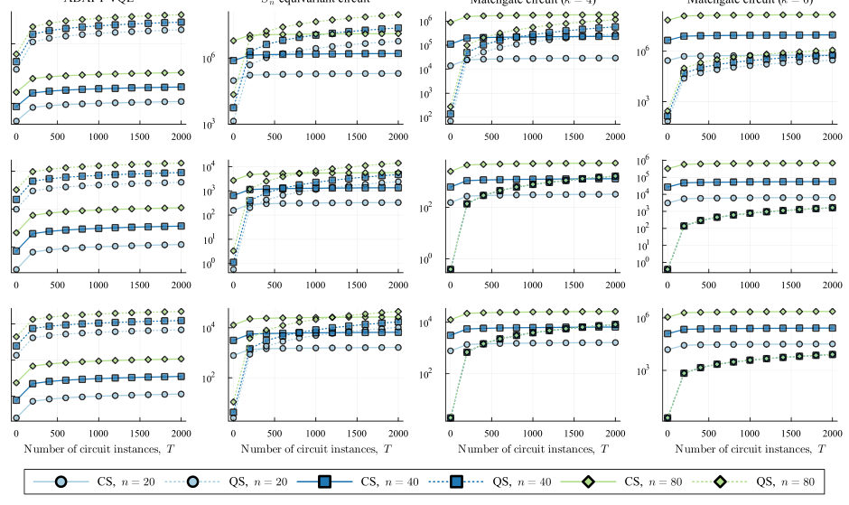
<figcaption class="paper-figure-caption"><b>Fig 2.</b> Figure 2. Estimated wall-clock time for QS and CS on IonQ Forte, Google Sycamore, and IBM Heron. Here, the runtime corresponds to the total runtime t(X) sim given by Eq. (104), which sums both the runtime on the quantum and classical hardware. Rows correspond to the three quantum hardware platforms, while all classical operations are assumed to run on the same classical hardware. The horizontal axis denotes the total number of circuit instances T. Columns correspond to ADAPT-VQE, Sn-equivariant circuits, and Matchgate circuits with κ = 4 and 6, while rows correspond to the three hardware models. Solid lines denote CS and dotted lines QS. Marker shapes indicate the system sizes n = 20, 40,...</figcaption>
</figure>
<figure class="paper-figure-card">
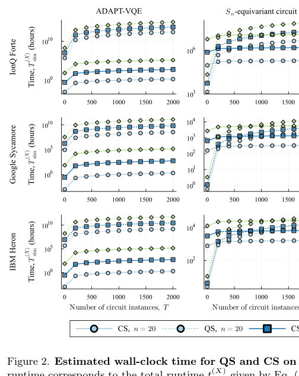
<figcaption class="paper-figure-caption"><b>Fig 3.</b> Figure 2 shows the resulting estimates for IonQ Forte, Google Sycamore, and IBM Heron, with ϵ = 0.001 and δ = 0.001. For the classical computation, we assume an elementary operation time of tC = 0.25 ns. Here we can see that classical simulability does not imply that CS is faster at finite system size. For ADAPT-VQE, the CS is faster throughout the parameter range considered here. In this case, the Hartree–Fock input state is known classically, so the surrogate incurs neither quantum data acquisition nor quantum circuit execution. Therefore, the runtime only consists of the runtime on the classical hardware. The Sn-equivariant example similarly benefits from the reduced Schur-block...</figcaption>
</figure>
<figure class="paper-figure-card">
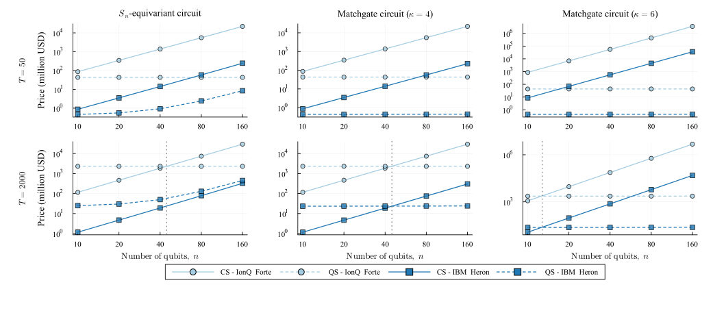
<figcaption class="paper-figure-caption"><b>Fig 4.</b> Figure 3. Estimated quantum hardware access cost of QS and CS over T = 50 and T = 2000 circuit instances for IonQ Forte and IBM Heron. We consider the Sn-equivariant and Matchgate examples with κ = 4 and κ = 6 described above, using the publicly available pricing data summarized in Table III. The plotted values account for quantum hardware access and do not include the monetary cost of the classical computation. Gray dashed lines indicate the crossover points between QS and CS. Results exceeding the available device size, namely n &gt; 36 for IonQ Forte and n &gt; 156 for IBM Heron, extrapolate the reported hardware pricing and should therefore be interpreted only as scaling estimates.</figcaption>
</figure>
<figure class="paper-figure-card">
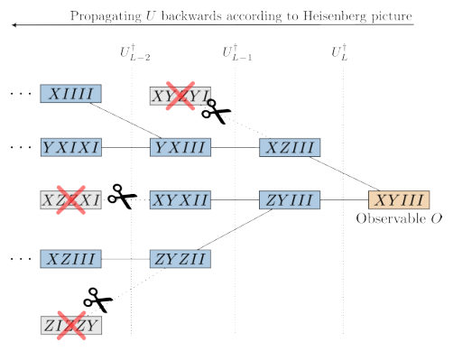
<figcaption class="paper-figure-caption"><b>Fig 5.</b> Figure 4. Schematic illustration of Pauli Propagation with weight truncation. The observable is evolved in the Heisenberg picture and propagation paths are discarded whenever the generated Pauli string exceeds the weight threshold τ (here, τ = 4).</figcaption>
</figure>
</div>

<p><strong>Summary.</strong> This work rigorously compares the resource costs of simulating quantum dynamics classically versus running them on quantum hardware. By analyzing multiple metrics—sample, time, and monetary cost—the authors demonstrate that classical simulability alone is insufficient to determine the best implementation strategy. This has major implications for designing near-term quantum algorithms.</p>
<p><strong>Why it may be interesting.</strong> It provides a crucial, practical framework for quantum algorithm assessment, warning that theoretical polynomial-time simulation guarantees do not translate to practical hardware or resource efficiency.</p>
<details>
<summary>Detailed structure</summary>
<p><strong>Main problem.</strong> The paper investigates whether quantum dynamics are more resource-efficient to simulate classically or to execute directly on quantum hardware, moving beyond simple asymptotic polynomial-time guarantees.</p>
<p><strong>Main result.</strong> The preferred implementation (classical vs. quantum) depends critically on the specific resource metric (sample, time, cost) and the number of circuit instances evaluated, showing no universal advantage.</p>
<p><strong>Method.</strong> The authors analyze resource scaling by comparing the complexity of quantum simulation (QS) against various structured classical simulation techniques (CS) for different circuit families.</p>
<p><strong>Model / system.</strong> The focus is on general quantum circuits and dynamics, analyzed through expectation value estimation of observables $f_U(
ho, O) = 	ext{Tr}(U
ho U^\dagger O)$. Specific models include Clifford circuits, free-fermionic dynamics, and QCNN/ADAPT-VQE architectures.</p>
<p><strong>Key observables.</strong> Expectation values $   ext{Tr}(U
ho U^\dagger O)$, Quantum Sample complexity ($N_{Q.S.}$), Quantum Time complexity ($N_{Q.T.}$), and Classical Time complexity ($N_{C.T.}$)</p>
<p><strong>Important parameters / regimes.</strong> Number of circuit instances ($T$), number of qubits ($n$), circuit depth ($L$), and approximation thresholds ($ au$).</p>
<p><strong>Assumptions / limitations.</strong> The analysis assumes repeated access to independently prepared copies of the input state $
ho$ and that the classical simulation relies on structured decompositions (e.g., Pauli strings, Majorana subspaces).</p>
<p><strong>Figures summary.</strong> Figure 1 schematically compares QS vs. CS. Figure 6 estimates the monetary cost for various hardware platforms for specific circuit families.</p>
<p><strong>Paper structure.</strong> The paper establishes the core problem by noting the limitations of asymptotic complexity, then analyzes specific, well-studied classically simulable circuit families (Clifford, free-fermionic, etc.) using multiple resource metrics, and concludes by comparing costs for modern variational algorithms like QCNN and ADAPT-VQE.</p>
</details>
<details>
<summary>Abstract</summary>
<p>Determining whether a quantum evolution can be efficiently simulated classically is central to understanding the boundary between classical and quantum computation. However, polynomial-time simulability is an asymptotic statement, and does not by itself determine whether the (quantum-inspired) classical simulation is actually practical. Indeed, different polynomial scalings can lead to vastly different computational costs, particularly when expensive preprocessing or quantum data acquisition is required. In this work, we ask whether classically simulable quantum dynamics are in practice more resource-efficient to simulate classically than to execute directly on quantum hardware. We analyze this question using three resource metrics, quantum sample, quantum time, and classical time complexity, for several widely studied classically simulable circuit families. Using representative hardware-level estimates, we identify regimes in which quantum simulation can be faster despite the existence of a polynomial-time classical algorithm, as well as regimes in which classical simulation remains more efficient. At the same time, the large quantum sampling cost needed to characterize unknown input states can make this polynomial-time classical simulation prohibitively expensive with current cloud-based hardware access prices. Ultimately, our work indicates that guarantees of classical simulability with polynomial resources alone are insufficient to determine the preferred implementation.</p>
</details>
<p><sub><a href="#top">↑ back to top</a></sub></p>

<p><a id="paper-2609.11441"></a></p>
<h3 id="vacancy-order-and-physical-properties-of-a-ternary-compound-fe068pd080te-with-an-fe1xte-type-structure"><a href="http://arxiv.org/abs/2609.11441v1">Vacancy Order and Physical Properties of a Ternary Compound Fe0.68Pd0.80Te with an α-Fe1+xTe-Type Structure</a></h3>
<p><strong>Authors:</strong> Bingxian Shi, Manyu Wang, Chenglin Shang, Yanyan Geng, Yangyang Fan, Xiaoxiao Pei, Li Huang, Daye Xu, Juanjuan Liu, Jinchen Wang, Hongxia Zhang, Hongliang Wang, Lijie Hao, Rui Xu, Zhongyi Lu, Zhihai Cheng, Peng Cheng<br>
<strong>Type:</strong> experiment · <strong>Category:</strong> disordered systems and neural networks · <strong>PDF:</strong> <a href="https://arxiv.org/pdf/2609.11441v1">https://arxiv.org/pdf/2609.11441v1</a><br>
<strong>Analysis basis:</strong> full PDF text, analyzed in chunks
<strong>Topic relevance:</strong> <code>analog quantum simulation</code> <strong>1/5</strong></p>
<div class="figure-strip-hint">↔ Scroll figures horizontally</div>
<div class="paper-figures-scroll">
<figure class="paper-figure-card">
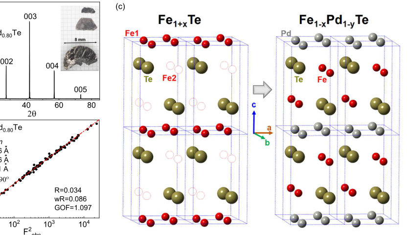
<figcaption class="paper-figure-caption"><b>Fig 1.</b> Figure 1: Crystal structure of Fe0.68Pd0.80Te. (a) X-ray diffraction patterns from the ab-plane of Fe0.68Pd0.80Te. The inset shows the photos of as-grown single crystals. (b) Refinement result of lattice Bragg peaks obtained from single crystal X-ray diffraction. (c) Crystal structure of Fe1+xTe and Fe1-xPd1-yTe. The x value in the former denotes the occupancy of interstitial site Fe2, while the x and y values in the latter denote the Fe- and Pd-site vacancy respectively.</figcaption>
</figure>
<figure class="paper-figure-card">
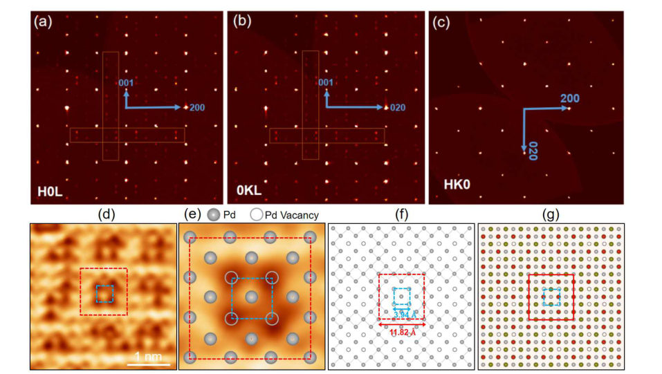
<figcaption class="paper-figure-caption"><b>Fig 2.</b> Figure 2: Vacancy order in Fe0.68Pd0.80Te. (a-c) Precession photos generated from single crystal X-ray diffraction data which show the reciprocal lattice views on (H0L), (0KL) and (HK0) respectively. (d) Atomic-resolved nc-AFM image on the cleavage plane of Fe0.68Pd0.80Te. (e) Zoom-in nc-AFM image and the schematic model of the 3×3 Pd-vacancy order. Schematic models of the vacancy order in Pd-middle-sublayer and FeTe-Pd-FeTe tri- layer are shown in (f) and (g) respectively. The extended 2D unit cell is illustrated using red square. The blue square which connects the four nearest Pd-vacancies also represent the size of initial 2D unit cell in the ab-plane.</figcaption>
</figure>
<figure class="paper-figure-card">

<figcaption class="paper-figure-caption"><b>Fig 3.</b> Figure 3: Magnetic properties of Fe0.68Pd0.80Te. (a) Temperature-dependent magnetic sus- ceptibilities under magnetic field of 0.1 T applied along H∥ab or H∥c. (b) Isothermal mag- netization at T=2 K. The inset shows the dM/dT curve for data along H∥ab. (c) The temperature-dependent AC susceptibilities measured under an oscillated AC field of 5.0 Oe applied along H∥ab. The peak in real part χ’ shows a shift with increasing frequencies.</figcaption>
</figure>
<figure class="paper-figure-card">

<figcaption class="paper-figure-caption"><b>Fig 4.</b> Figure 4: Electrical transport properties of Fe0.68Pd0.80Te. (a) The temperature-depdendent resistivity under magnetic field of 0 T and 5 T. The inset shows a plot of ln(ρ) as a function of T−1. (b) Magnetoresistance at selected temperatures. (c) The field-dependent Hall resistivity ρxy at selected temperatures. The inset shows the temperature-dependent Hall coefficients obtained from linear fit of ρxy(H).</figcaption>
</figure>
</div>

<p><strong>Summary.</strong> This paper reports the synthesis and detailed characterization of the novel compound Fe0.68Pd0.80Te. Key findings include the confirmation of a 3x3x3 vacancy superlattice and the identification of a spin-glass magnetic state below 40 K. Electrically, the material is characterized as a semiconductor with a very small band gap, suggesting potential for quantum electronic applications.</p>
<p><strong>Why it may be interesting.</strong> The combination of vacancy ordering (a form of structural disorder) leading to a spin-glass state and semiconducting behavior makes it relevant for studying disorder-induced quantum phenomena in layered materials.</p>
<details>
<summary>Detailed structure</summary>
<p><strong>Main problem.</strong> The study aims to characterize a new ternary compound, Fe0.68Pd0.80Te, focusing on the role of vacancy ordering and its resulting physical properties.</p>
<p><strong>Main result.</strong> The material exhibits a spin-glass ground state below 40 K, is a semiconductor with a very small band gap (&lt; 10 meV), and possesses a confirmed 3x3x3 Pd-vacancy order.</p>
<p><strong>Method.</strong> The research employed a combination of structural characterization (XRD, nc-AFM), magnetic measurements (MPMS), and electrical transport measurements (PPMS-14T).</p>
<p><strong>Model / system.</strong> The physical system is the layered ternary compound Fe0.68Pd0.80Te, which adopts an alpha-Fe1+xTe-type tetragonal structure. The key structural feature is the presence of a vacancy-ordered superstructure, which influences its electronic and magnetic behavior.</p>
<p><strong>Key observables.</strong> Spin-glass transition temperature (Tg ~ 40 K), semiconductor band gap (&lt; 10 meV), hole-like charge carriers, and the 3x3x3 Pd-vacancy superlattice order.</p>
<p><strong>Important parameters / regimes.</strong> Temperature (T), magnetic field (H), and the vacancy ordering parameter (3x3x3).</p>
<p><strong>Assumptions / limitations.</strong> The structural refinement assumes the material maintains a tetragonal structure despite significant chemical substitution and vacancy ordering. The small band gap suggests semiconductor behavior.</p>
<p><strong>Figures summary.</strong> Figures show XRD patterns confirming the structure, magnetic susceptibility curves demonstrating a spin-glass state, and resistivity vs. temperature plots indicating semiconducting behavior.</p>
<p><strong>Paper structure.</strong> The paper follows a standard materials science structure: structural identification and characterization (XRD, AFM) $
ightarrow$ magnetic property measurement (Spin-glass state) $
ightarrow$ electronic transport analysis (Semiconducting gap, MR/Hall effect) $
ightarrow$ Conclusion on quantum potential.</p>
</details>
<details>
<summary>Abstract</summary>
<p>We report the identification and characterization of a new compound Fe0.68Pd0.80Te with an α-Fe1+xTe prototype structure. Different from the Fe-square net and minor occupancy of interstitial Fe-sites in Fe1+xTe, Fe0.68Pd0.80Te is featured by a Pdsquare net and near 68% occupancy of the corresponding interstitial Fe-sites. Furthermore, noncontact atomic force microscopy and X-ray diffraction provide evidence for the existence of a 3<em>3</em>3 Pd-vacancy order in this layered material. A spin-glass ground state below Tg 40 K is identified via magnetic characterization. Electrical transport measurements show that Fe0.68Pd0.80Te is a semiconductor with a very small band gap below 10 meV. It has weak negative magnetoresistance and holelike charge carriers below room temperature. Our results demonstrate its potentials for further exploring various quantum phenomena.</p>
</details>
<p><sub><a href="#top">↑ back to top</a></sub></p>

<p><a id="paper-2609.11327"></a></p>
<h3 id="virtual-quantum-neural-networks"><a href="http://arxiv.org/abs/2609.11327v1">Virtual quantum neural networks</a></h3>
<p><strong>Authors:</strong> Benchi Zhao, Xuanqiang Zhao, Yinan Li, Yingzhou Li, Giulio Chiribella<br>
<strong>Type:</strong> theory · <strong>Category:</strong> quantum information and computing · <strong>PDF:</strong> <a href="https://arxiv.org/pdf/2609.11327v1">https://arxiv.org/pdf/2609.11327v1</a><br>
<strong>Analysis basis:</strong> full PDF text, analyzed in chunks
<strong>Topic relevance:</strong> <code>quantum measurements</code> <strong>1/5</strong></p>
<div class="figure-strip-hint">↔ Scroll figures horizontally</div>
<div class="paper-figures-scroll">
<figure class="paper-figure-card">

<figcaption class="paper-figure-caption"><b>Fig 1.</b> Fig 1. (a) Training of a quantum neural network. The network is designed to implement a parametrized quantum circuit (PQC), depending on a set of parameters θ. In the noiseless case, the PQC is represented by a unitary operator U(θ), which is applied to a quantum system, initially in the state ρ0. Then, a measurement is performed, and the statistics of the outcomes is used to estimate the value of a loss function LQNN(θ). Finally, the classical optimization method is used to update the parameters in the PQC to minimize the loss function. (b) Training of a virtual quantum neural network. N parametrized quantum circuits (PQCs) are randomly sampled and applied to the input state ρ0, producing...</figcaption>
</figure>
<figure class="paper-figure-card">

<figcaption class="paper-figure-caption"><b>Fig 2.</b> Fig 2. Variational quantum error mitigation protocol. Multiple parametrized quantum channels C1(θ1), . . . , CN(θN) are randomly sampled, producing output states ρ1, . . . , ρN, respectively. At the postprocessing stage, the output states are combined linearly with coefficients (ci)N i=1, yielding the virtual state σ = PN i=1 ciρi. The goal of the variational protocol is to find parameters such that the virtual state σ is is close to the Bell state Φ+.</figcaption>
</figure>
<figure class="paper-figure-card">

<figcaption class="paper-figure-caption"><b>Fig 3.</b> Fig 3. Variational circuits for error mitigation. (a) A noiseless ansatz for the PQC is constructed with rotation-X gates, rotation-Z gates and control-NOT gates. (b) A noisy ansatz of PQC is con- structed by letting the single-qubit gates and two-qubit gates be fol- lowed by single-qubit and two-qubit noise processes, respectively.</figcaption>
</figure>
<figure class="paper-figure-card">

<figcaption class="paper-figure-caption"><b>Fig 4.</b> Fig 5. Approximation error of VQEM on bounded-size noisy cir- cuits. The approximation error, quantified by the HS norm, is shown as a function of the sampling overhead budget in the range [1, 2.5]. The orange squares (light blue squares) show the results achieved by the VQEM algorithm run on bounded-size noisy (noiseless) circuits.</figcaption>
</figure>
<figure class="paper-figure-card">

<figcaption class="paper-figure-caption"><b>Fig 5.</b> Fig 4. Dependence of the approximation error and sampling overhead on the penalty strength. Top: relation between the penalty strength and the approximation error, quantified by the Hilbert-Schmidt distance between the virtual state σ and target Bell state Φ+. Bottom: relation between the penalty strength and the sam- pling overhead (blue dotted line). The minimum sampling overhead over all possible quantum channels is shown by the black dashed line.</figcaption>
</figure>
</div>

<p><strong>Summary.</strong> This paper introduces Virtual Quantum Neural Networks (VQNNs) as an extension to standard QNNs to enhance expressivity and noise robustness in quantum machine learning. VQNNs achieve this by combining multiple quantum circuits and classically aggregating their measurement results. This generalized approach is shown to improve performance in tasks like quantum error mitigation and ground-state energy estimation.</p>
<p><strong>Why it may be interesting.</strong> The development of VQNNs provides a powerful, generalized framework for quantum machine learning that explicitly addresses the limitations imposed by the restricted set of quantum operations available on near-term hardware.</p>
<details>
<summary>Detailed structure</summary>
<p><strong>Main problem.</strong> To improve upon standard Quantum Neural Networks (QNNs) by developing a more general model, the Virtual Quantum Neural Network (VQNN), to increase expressivity and improve noise robustness in quantum machine learning.</p>
<p><strong>Main result.</strong> VQNNs extend QNNs by sampling over multiple quantum circuits and classically post-processing the measurement outcomes, allowing access to linear combinations of completely positive maps.</p>
<p><strong>Method.</strong> The VQNN loss function is minimized by optimizing parameters $(	heta, c)$ using classical optimization methods, which involves estimating expectation values via quantum sampling.</p>
<p><strong>Model / system.</strong> The model extends standard QNNs (parametrized by unitaries $U(	heta)$) to VQNNs, which utilize a linear combination of multiple quantum circuits, represented by coefficients $c_i$ and unitaries $U_i(	heta^{(i)})$.</p>
<p><strong>Key observables.</strong> Expectation values of Hermitian operators $O$, and the final estimated ground-state energy $E_0$.</p>
<p><strong>Important parameters / regimes.</strong> The coefficients $c = (c_1, \dots, c_N)$ and the circuit parameters $   heta = (    heta^{(1)}, \dots,  heta^{(N)})$.</p>
<p><strong>Assumptions / limitations.</strong> The analysis assumes that the sampling overhead $\|c\|_1$ can be bounded to prevent the VQNN from worsening the barren plateau problem.</p>
<p><strong>Figures summary.</strong> Figure 1 illustrates the training process comparison between standard QNNs (single unitary) and VQNNs (sampling multiple PQCs and aggregating data).</p>
<p><strong>Paper structure.</strong> The paper introduces the VQNN model, details the mathematical formulation for both noiseless and noisy regimes, analyzes its performance in tasks like error mitigation and classification, and discusses theoretical aspects like barren plateau analysis and SDP formulations.</p>
</details>
<details>
<summary>Abstract</summary>
<p>Quantum neural networks are a prominent model of quantum machine learning. Their training consists in the minimization of a given loss function over a parametrized family of quantum circuits, mathematically described by unitary operators, or, more generally, completely positive linear maps. In this work, we extend the notion of quantum neural network, using random sampling and classical data processing to enlarge the optimization space in a way that includes linear combinations of completely positive maps. Our extended model, called virtual quantum neural networks, leverages its enlarged optimization space to achieve increased expressivity and improved noise robustness. These benefits are illustrated in three representative tasks: quantum error mitigation, binary classification, and estimation of ground-state energies. Overall, virtual quantum neural networks offer a flexible learning paradigm that expands the space of achievable computations and strengthens the applications of near-term quantum hardware.</p>
</details>
<p><sub><a href="#top">↑ back to top</a></sub></p>
<h2 id="other-papers-21">Other papers (21)</h2>
<p><em>Papers from primary archives without highlighted authors or any topic match. Click to expand.</em></p>
<details>
<summary>Show other papers</summary>

<p><a id="paper-2609.10670"></a></p>
<h3 id="3d-ising-field-theory-with-magnetic-deformation-fuzzy-sphere-meets-tcsa"><a href="http://arxiv.org/abs/2609.10670v1">3d Ising Field Theory with Magnetic Deformation: Fuzzy Sphere Meets TCSA</a></h3>
<p><strong>Authors:</strong> Giulia Fardelli, A. Liam Fitzpatrick, Emanuel Katz, Yuan Xin<br>
<strong>Type:</strong> theory · <strong>Category:</strong> statistical mechanics · <strong>PDF:</strong> <a href="https://arxiv.org/pdf/2609.10670v1">https://arxiv.org/pdf/2609.10670v1</a><br>
<strong>Analysis basis:</strong> full PDF text, analyzed in chunks</p>
<div class="figure-strip-hint">↔ Scroll figures horizontally</div>
<div class="paper-figures-scroll">
<figure class="paper-figure-card">

<figcaption class="paper-figure-caption"><b>Fig 1.</b> Figure 1. Spectrum of Ising Field theory in 2d (left) and in 3d (right) including the vacuum energy,</figcaption>
</figure>
<figure class="paper-figure-card">

<figcaption class="paper-figure-caption"><b>Fig 2.</b> Figure 2. Schematic view of hierarchy of scales involved.</figcaption>
</figure>
<figure class="paper-figure-card">

<figcaption class="paper-figure-caption"><b>Fig 3.</b> Figure 4. Spectrum obtained from ED at N = 16 keeping the 10 lowest eigenvalues. The spectrum has been normalized by requiring Evac(hz = 0) = 0 and E1(hz = 0) = ∆σ. hz,FS has been rescaled to match hz according to (5.1).</figcaption>
</figure>
<figure class="paper-figure-card">

<figcaption class="paper-figure-caption"><b>Fig 4.</b> Figure 5. N-dependence of Evac (left) and E1 −Evac (right) at hz = 2.5. Solid lines are fits made using points 12 to 22: for Evac the fit corresponds to −3.6 + 1.3</figcaption>
</figure>
<figure class="paper-figure-card">

<figcaption class="paper-figure-caption"><b>Fig 5.</b> Figure 6. Left: Vacuum energy Evac at small coupling hz, compared with the quadratic O(h2 z) and quartic O(h4 z) approximations, Evac(hz) = −1.933h2 z + 4.152h4 z, from (2.7). Right: Scalar sector mass gap E1 −Evac, compared with the O(h2 z) quadratic approximation (2.8).</figcaption>
</figure>
</div>
<p><strong>Summary.</strong> This paper investigates the magnetic deformation of the 3D Ising Field Theory using advanced theoretical techniques, specifically comparing results from the Fuzzy Sphere and TCSA approaches. The authors successfully extract universal quantities, finding evidence for a bound state within the theory's spectrum. This work advances the understanding of critical systems on curved manifolds by bridging CFT and lattice/geometric methods.</p>
<p><strong>Why it may be interesting.</strong> The rigorous application of CFT techniques (TCSA) to study critical phenomena and phase transitions (Ising model) provides deep insights into how boundary conditions (the sphere) and external fields (magnetic deformation) modify universal critical exponents and low-energy spectra.</p>
<details>
<summary>Detailed structure</summary>
<p><strong>Main problem.</strong> The study focuses on the magnetic deformation of the (2+1)d Ising Conformal Field Theory (CFT), or Ising Field Theory (IFT), when placed on a spatial sphere.</p>
<p><strong>Main result.</strong> The authors find evidence that the IFT contains a bound-state with a small binding energy, and they derive quantitative relations for key observables like the vacuum energy and mass gap.</p>
<p><strong>Method.</strong> The research employs two complementary theoretical frameworks: the Fuzzy Sphere (FS) setup and the Truncated Conformal Space Approach (TCSA) to model the system's Hamiltonian and extract universal quantities.</p>
<p><strong>Model / system.</strong> The system is the 3D Ising Field Theory (IFT) subjected to a magnetic deformation. The analysis uses Hamiltonians derived from both the FS model and the general CFT deformation structure, involving couplings like $g$ and $h_z$.</p>
<p><strong>Key observables.</strong> Vacuum energy ($E_{vac}$), mass gap ($m_{	ext{gap}}$), and the mass of a potential bound-state ($m_{BS}$).</p>
<p><strong>Important parameters / regimes.</strong> The magnetic coupling $h_z$, the deformation parameter $g$, and the large volume limit ($N 	o \infty$).</p>
<p><strong>Assumptions / limitations.</strong> The analysis assumes the validity of local effective field theory descriptions on the sphere and involves approximations inherent to the TCSA and FS methods.</p>
<p><strong>Figures summary.</strong> Figure 1 illustrates the spectrum of Ising Field theory in 2D, while Tables 1 and 2 provide lists of conformal dimensions, spins, and OPE coefficients used in the TCSA calculations.</p>
<p><strong>Paper structure.</strong> The paper systematically develops the machinery to calculate the Hamiltonian matrix elements for the deformed IFT using TCSA, comparing these results with those obtained from the Fuzzy Sphere formulation to extract physical observables.</p>
</details>
<details>
<summary>Abstract</summary>
<p>We study the magnetic deformation of the $(2+1)$d Ising CFT, also known as Ising Field Theory (IFT), on a spatial sphere. We use the Fuzzy Sphere (FS) Ising setup and compare it to the Truncated Conformal Space Approach (TCSA). Universal, infinite volume, IFT quantities are extracted by modeling the effects of curvature, as expected from a local effective theory on the sphere. We find evidence that IFT contains a bound-state with a small binding energy. Locality also allows us to extract the same IFT quantities from different angular momentum sectors, providing additional consistency checks.</p>
</details>
<p><sub><a href="#top">↑ back to top</a></sub></p>

<p><a id="paper-2609.11664"></a></p>
<h3 id="a-near-quartic-separation-between-certificate-complexity-and-quantum-query-complexity"><a href="http://arxiv.org/abs/2609.11664v1">A Near-Quartic Separation Between Certificate Complexity and Quantum Query Complexity</a></h3>
<p><strong>Authors:</strong> Andris Ambainis, Jānis Iraids, Martins Kokainis<br>
<strong>Type:</strong> theory · <strong>Category:</strong> quantum information and computing · <strong>PDF:</strong> <a href="https://arxiv.org/pdf/2609.11664v1">https://arxiv.org/pdf/2609.11664v1</a><br>
<strong>Analysis basis:</strong> full PDF text, analyzed in chunks</p>
<div class="figure-strip-hint">↔ Scroll figures horizontally</div>
<div class="paper-figures-scroll">
<figure class="paper-figure-card">

<figcaption class="paper-figure-caption"><b>Fig 1.</b> Low-resolution page preview, page 2</figcaption>
</figure>
<figure class="paper-figure-card">

<figcaption class="paper-figure-caption"><b>Fig 2.</b> Low-resolution page preview, page 3</figcaption>
</figure>
<figure class="paper-figure-card">

<figcaption class="paper-figure-caption"><b>Fig 3.</b> Low-resolution page preview, page 4</figcaption>
</figure>
<figure class="paper-figure-card">

<figcaption class="paper-figure-caption"><b>Fig 4.</b> Low-resolution page preview, page 5</figcaption>
</figure>
<figure class="paper-figure-card">

<figcaption class="paper-figure-caption"><b>Fig 5.</b> Low-resolution page preview, page 6</figcaption>
</figure>
</div>
<p><strong>Summary.</strong> This theoretical paper establishes a near-quartic separation between the Certificate Complexity and the quantum query complexity for a specially constructed Boolean function. By constructing this function and rigorously analyzing its quantum query complexity, the authors resolve a long-standing open problem in computational complexity theory. The result provides a concrete measure of how much quantum computation can outperform classical certificate verification methods.</p>
<p><strong>Why it may be interesting.</strong> While the topic is purely computational complexity, the techniques used—such as analyzing query complexity and deriving lower bounds—are foundational to understanding the limits of quantum computation, which is relevant to quantum information theory.</p>
<details>
<summary>Detailed structure</summary>
<p><strong>Main problem.</strong> The paper addresses the open question of determining the maximum possible separation gap between Certificate Complexity ($C(f)$) and bounded-error quantum query complexity ($Q(f)$) for total Boolean functions.</p>
<p><strong>Main result.</strong> The authors construct a specific total Boolean function $f$ demonstrating a near-quartic separation, showing that $Q(f) = \widetilde{O}(\sqrt[4]{C(f)})$, which closes the gap up to logarithmic factors.</p>
<p><strong>Method.</strong> The methodology involves constructing the function $f$ using a 'cheat-sheet totalization' based on position lists and analyzing the quantum query complexity using graph search procedures and error bounding techniques.</p>
<p><strong>Model / system.</strong> The analysis is purely theoretical, focusing on the complexity measures ($C(f)$ and $Q(f)$) associated with abstract total Boolean functions $f$ defined over input bits.</p>
<p><strong>Key observables.</strong> The primary observables are the quantum query complexity $Q(f)$ and the certificate complexity $C(f)$, with the derived bound $Q(f) = \widetilde{O}(\sqrt[4]{C(f)})$.</p>
<p><strong>Important parameters / regimes.</strong> The size parameter $n$ of the function $f$, and derived parameters like $r$ (number of disjoint inputs) and $   au_n$ related to the function's structure.</p>
<p><strong>Assumptions / limitations.</strong> The construction relies on the existence of position lists satisfying specific combinatorial inequalities (Lemma 3.1), and the quantum analysis assumes the existence of specific unitary circuits and error bounds.</p>
<p><strong>Paper structure.</strong> The paper builds upon established complexity relations, details the construction of the function $f$ using position lists, analyzes the quantum query complexity via graph search procedures (FindSource), and concludes by proving the separation bound through rigorous error analysis.</p>
</details>
<details>
<summary>Abstract</summary>
<p>We construct a total Boolean function $f$ for which $Q(f) = \widetilde{O}(\sqrt[4]{C(f)})$, where $Q(f)$ denotes the bounded-error quantum query complexity and $C(f)$ denotes the certificate complexity. This resolves a longstanding open question and is tight up to logarithmic factors.</p>
</details>
<p><sub><a href="#top">↑ back to top</a></sub></p>

<p><a id="paper-2609.10853"></a></p>
<h3 id="a-new-generation-of-effective-core-potentials-selected-heavy-5d-and-6p-elements"><a href="http://arxiv.org/abs/2609.10853v1">A new generation of effective core potentials: Selected heavy 5d and 6p elements</a></h3>
<p><strong>Authors:</strong> Omar Madany, Lubos Mitas<br>
<strong>Type:</strong> theory · <strong>Category:</strong> strongly correlated electrons · <strong>PDF:</strong> <a href="https://arxiv.org/pdf/2609.10853v1">https://arxiv.org/pdf/2609.10853v1</a><br>
<strong>Analysis basis:</strong> full PDF text, analyzed in chunks</p>
<div class="figure-strip-hint">↔ Scroll figures horizontally</div>
<div class="paper-figures-scroll">
<figure class="paper-figure-card">

<figcaption class="paper-figure-caption"><b>Fig 1.</b> Figure 2: Low-lying mean absolute deviation of the atomic excitation energies at the CCSD(T) level. The ECP comparison scheme follow the same conventions detailed in Fig. 1).</figcaption>
</figure>
<figure class="paper-figure-card">

<figcaption class="paper-figure-caption"><b>Fig 2.</b> Figure 3: Weighted mean absolute deviation of the atomic excitation energies at the CCSD(T) level. The ECP comparison scheme follow the same conventions detailed in Fig. 1).</figcaption>
</figure>
<figure class="paper-figure-card">

<figcaption class="paper-figure-caption"><b>Fig 3.</b> Figure 1: Mean absolute deviation of the atomic excitation energies at the CCSD(T) level for various ECPs relative to the scalar relativistic all-electron reference. The performance of the ccECPs is compared against available legacy ECPs and frozen-core UC methods. The x-axis labels denote the element, and the number of valence electrons explicitly treated in the calculation.</figcaption>
</figure>
<figure class="paper-figure-card">

<figcaption class="paper-figure-caption"><b>Fig 4.</b> Figure 4: Overall average atomic discrepancies (MAD, LMAD, and WMAD) for all evaluated 5d and 6p element pseudopotentials relative to relativistic AE CCSD(T) reference data. The primary (left) y-axis tracks absolute deviations (MAD/LMAD), while the secondary (right) y-axis charts the energy-normalized weighted deviation (WMAD).</figcaption>
</figure>
<figure class="paper-figure-card">

<figcaption class="paper-figure-caption"><b>Fig 5.</b> Figure 5: Binding energy discrepancies relative to the relativistic AE reference for (a) HfH and (b) HfO molecules. Markers denote the calculated discrepancies at discrete bond lengths, connected by lines to guide the eye, and the gray-shaded region illustrates the threshold for chemical accuracy. The vertical dashed lines mark the equilibrium bond length (Re) extracted from the AE reference and ccECP. To evaluate relative performance, the ccECP is compared against available legacy ECPs that employ an equivalent 60-electron [[Kr]4d104f 14] core.</figcaption>
</figure>
</div>
<p><strong>Summary.</strong> This work introduces a new generation of correlation-consistent effective core potentials (ccECPs) specifically designed for heavy 5d and 6p elements. By employing a sophisticated, tiered core-valence partitioning strategy and optimizing against high-level $ ext{CCSD}(  ext{T})$ calculations, the potentials achieve exceptional accuracy and transferability. This advancement removes a major bottleneck for predictive simulations in heavy-element materials science.</p>
<p><strong>Why it may be interesting.</strong> The rigorous treatment of relativistic effects and the development of highly accurate, transferable potentials are crucial for any advanced many-body simulation involving heavy elements, which is a key area of condensed matter and quantum chemistry.</p>
<details>
<summary>Detailed structure</summary>
<p><strong>Main problem.</strong> The development of highly accurate and transferable effective core potentials (ccECPs) for heavy elements (5d and 6p blocks) to correctly model electronic structure.</p>
<p><strong>Main result.</strong> The new ccECPs achieve outstanding atomic precision (0.045 eV deviation) and robust molecular transferability (dissociation energy errors &lt; 0.03 eV), overcoming limitations in modeling heavy-element systems.</p>
<p><strong>Method.</strong> The potentials are derived by optimizing parameters against high-fidelity all-electron benchmarks calculated using $    ext{CCSD}(  ext{T})$ theory, incorporating a tiered core-valence partitioning strategy.</p>
<p><strong>Model / system.</strong> The focus is on heavy elements from the 5d (Hf, Os, Hg) and 6p (Tl, Po, At, Rn) blocks. The underlying theory involves partitioning the semi-local SO relativistic ECP ($   ext{SOREP}$) into scalar and spin-orbit components.</p>
<p><strong>Key observables.</strong> Global average atomic low-lying states deviation (0.045 eV), dissociation energy discrepancies (&lt; 0.03 eV), and equilibrium bond lengths (&lt; 0.005 Å).</p>
<p><strong>Important parameters / regimes.</strong> The core-valence partitioning uses three resolutions: 60-core, 78-core, and 68-core, optimizing the balance between accuracy and computational efficiency.</p>
<p><strong>Assumptions / limitations.</strong> The method assumes that core-valence correlation effects can be systematically captured through the tiered partitioning strategy, and the optimization relies on $   ext{CCSD}(  ext{T})$ reference data.</p>
<p><strong>Figures summary.</strong> Figures compare Mean Absolute Deviation (MAD), Low-Lying Mean Absolute Deviation (LMAD), and Weighted Mean Absolute Deviation (WMAD) of the new ECPs against all-electron references.</p>
<p><strong>Paper structure.</strong> The paper details the theoretical framework for the ccECPs, outlines the tiered partitioning strategy, describes the optimization process using various objective functions, and presents benchmark comparisons demonstrating superior accuracy and transferability.</p>
</details>
<details>
<summary>Abstract</summary>
<p>We expand the correlation-consistent effective core potentials (ccECPs) library by developing semi-local pseudopotentials and matching basis sets by heavy-elements from $5d$ (Hf, Os, Hg) and $6p$ (Tl, Po, At, Rn) blocks. In order to accurately capture scalar relativistic effects, spin-orbit coupling, and electron-electron correlation, we implement a tiered core-valence partitioning strategy across three distinct resolutions. This includes a small 60-core (Hf, Os, Hg) that explicitly correlates subvalence shells, a large 78-core definition for the main-group elements that rigorously accounts for core polarization and relaxation effects in sparse valence environments, and an intermediate 68-core partition for Hg and Tl. This 68-core architecture represents a unique development in the ccECP library, optimizing the balance between accuracy and computational efficiency in a manner unexplored for ligther elements. Optimized against relativistic all-electron CCSD(T) references, the ccECPs deliver outstanding atomic precision, achieving a global average atomic low-lying states deviation of just 0.045 eV. This accuracy translates directly to robust molecular transferability, systematically restricting dissociation energy discrepancies to under 0.03 eV, equilibrium bond lengths to within 0.005 Å. By enforcing a regularized, finite potential at the origin for enhanced numerical stability in stochastic quantum Monte Carlo methods, this library removes a critical methodological bottleneck for predictive many-body simulations of heavy-element systems and materials.</p>
</details>
<p><sub><a href="#top">↑ back to top</a></sub></p>

<p><a id="paper-2609.10729"></a></p>
<h3 id="a-quantum-inspired-dequantization-method-for-diagonally-weighted-matrix-functions-application-to-learning-with-optimized-random-features"><a href="http://arxiv.org/abs/2609.10729v1">A Quantum-Inspired Dequantization Method for Diagonally Weighted Matrix Functions: Application to Learning with Optimized Random Features</a></h3>
<p><strong>Authors:</strong> Natsuto Isogai, Mio Murao, Hayata Yamasaki<br>
<strong>Type:</strong> theory · <strong>Category:</strong> numerical methods · <strong>PDF:</strong> <a href="https://arxiv.org/pdf/2609.10729v1">https://arxiv.org/pdf/2609.10729v1</a><br>
<strong>Analysis basis:</strong> full PDF text, analyzed in chunks</p>
<div class="figure-strip-hint">↔ Scroll figures horizontally</div>
<div class="paper-figures-scroll">
<figure class="paper-figure-card">

<figcaption class="paper-figure-caption"><b>Fig 1.</b> Low-resolution page preview, page 2</figcaption>
</figure>
<figure class="paper-figure-card">

<figcaption class="paper-figure-caption"><b>Fig 2.</b> Low-resolution page preview, page 3</figcaption>
</figure>
<figure class="paper-figure-card">

<figcaption class="paper-figure-caption"><b>Fig 3.</b> Low-resolution page preview, page 4</figcaption>
</figure>
<figure class="paper-figure-card">

<figcaption class="paper-figure-caption"><b>Fig 4.</b> Low-resolution page preview, page 5</figcaption>
</figure>
<figure class="paper-figure-card">

<figcaption class="paper-figure-caption"><b>Fig 5.</b> Low-resolution page preview, page 6</figcaption>
</figure>
</div>
<p><strong>Summary.</strong> This paper presents a novel classical algorithm to simulate quantum routines for learning with optimized random features. It overcomes the challenge of unavailable direct matrix access by using a diagonal-truncation method to reduce the problem to a small principal block. The result provides a polynomial-time classical sampler with guaranteed accuracy, advancing the field of quantum-inspired computation.</p>
<p><strong>Why it may be interesting.</strong> This work provides a concrete example of how to bridge the gap between quantum computational models and classical algorithms in machine learning, which is highly relevant for developing practical, resource-efficient quantum-inspired ML techniques.</p>
<details>
<summary>Detailed structure</summary>
<p><strong>Main problem.</strong> Developing a classical algorithm to dequantize quantum-advantage candidates, specifically the sampler based on Quantum Singular Value Transformation (QSVT) for learning with optimized random features, when direct sampling access to the required composite matrix is unavailable.</p>
<p><strong>Main result.</strong> The authors developed a classical sampler that successfully dequantizes the quantum routine, achieving prescribed accuracy with a runtime polynomial in the dimension $D$. This shows that classical structure can be extracted even when direct matrix access is impossible.</p>
<p><strong>Method.</strong> The method employs a diagonal-truncation approximation, restricting the problem to a small principal block indexed by 'heavy coordinates' identified via sampling. Error bounds are established using the Lipschitz continuity of the matrix function $f$ and the operator norm.</p>
<p><strong>Model / system.</strong> The problem involves approximating a matrix function $f(M)$ where $M = \gamma I + D A D$. $D$ is a diagonal matrix supplied via sampling-and-query access, and $A$ is a Hermitian matrix supplied via entry queries.</p>
<p><strong>Key observables.</strong> Approximation error bounded by $
u$, Total Variation Distance $dTV(D_\epsilon, D') \le \delta$, and the final classical sampler's runtime complexity.</p>
<p><strong>Important parameters / regimes.</strong> The error tolerance $\epsilon_D$, the approximation error $
u$, the total variation distance $\delta$, and the dimension $D$.</p>
<p><strong>Assumptions / limitations.</strong> The method assumes the availability of specific oracle access ($SQ(D)$ and $Q(A)$) and relies on bounding the error using the Lipschitz constant $L$ of the function $f$.</p>
<p><strong>Figures summary.</strong> Figure 1 illustrates the process of Diagonal truncation, showing how samples identify heavy coordinates and restrict the computation to a principal block.</p>
<p><strong>Paper structure.</strong> The paper first introduces the problem of dequantizing $f(\gamma I + DAD)$ under limited access. It develops the diagonal-truncation approximation, establishing error bounds. Subsequently, it proves the existence of a classical randomized algorithm (Theorem 2) to sample from the required distribution $D_\epsilon$, culminating in a final complexity analysis.</p>
</details>
<details>
<summary>Abstract</summary>
<p>Quantum-inspired classical algorithms have dequantized several quantum machine learning routines by replacing quantum linear-algebra subroutines with classical counterparts. However, the sampler based on quantum singular value transformation (QSVT) for learning with optimized random features is not covered by existing dequantization frameworks, because the matrix to be inverted is not itself available through sampling access. In this work, we develop a classical algorithm to address this type of quantum-advantage candidate. Our method samples heavy indices, reduces the transformation to a small principal block, and outputs a sparse classical representation with operator-norm guarantees. Applying this method dequantizes the sampler for optimized random features, giving a classical sampler with prescribed accuracy and polynomially related runtime. These results show that the factorization underlying a quantum block encoding can itself provide sufficient classical structure even when sampling-and-query access to the composite matrix is unavailable.</p>
</details>
<p><sub><a href="#top">↑ back to top</a></sub></p>
<hr>
<p>
<a href="index.html">← Index</a>
 · <a href="papers_04.html">← Previous</a> · <a href="papers_06.html">Next →</a>
</p>
<hr>

</body>
</html>
